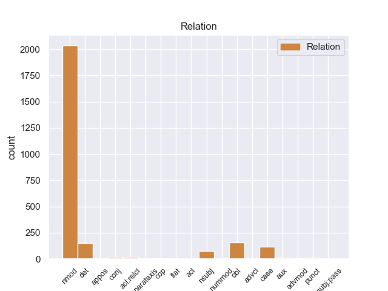
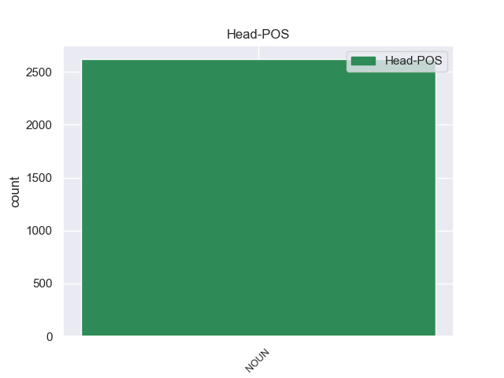
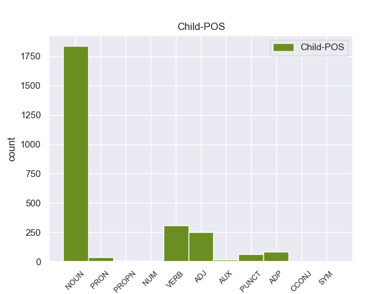

Distribution of features within this leaf



Agreement Rules sorted by frequency.
- When the dependent token is the nominal modifier(nmod) of the head token, and the head token is NOUN and the dependent token is NOUN.
1 Το _ _ _ _ 0 _ _ _
2 άρθρο άρθρος NOUN _ Case=Gen|Gender=Fem|Number=Sing 0 _ _ _
3 9 _ _ _ _ 0 _ _ _
4 του _ _ _ _ 0 _ _ _
5 Πρωτοκόλλου _ _ _ _ 0 _ _ _
6 , _ _ _ _ 0 _ _ _
7 όπως _ _ _ _ 0 _ _ _
8 επεσήμανε _ _ _ _ 0 _ _ _
9 με _ _ _ _ 0 _ _ _
10 αυστηρότητα _ _ _ _ 0 _ _ _
11 η _ _ _ _ 0 _ _ _
12 Πρόεδρος _ _ _ _ 0 _ _ _
13 Fontaine _ _ _ _ 0 _ _ _
14 σ _ _ _ _ 0 _ _ _
15 τον _ _ _ _ 0 _ _ _
16 Εισαγγελέα _ _ _ _ 0 _ _ _
17 , _ _ _ _ 0 _ _ _
18 μας _ _ _ _ 0 _ _ _
19 απαλλάσσει _ _ _ _ 0 _ _ _
20 τελείως _ _ _ _ 0 _ _ _
21 από _ _ _ _ 0 _ _ _
22 οποιαδήποτε _ _ _ _ 0 _ _ _
23 νομική _ _ _ _ 0 _ _ _
24 διαδικασία _ _ _ _ 0 _ _ _
25 σε _ _ _ _ 0 _ _ _
26 σχέση _ _ _ _ 0 _ _ _
27 με _ _ _ _ 0 _ _ _
28 την _ _ _ _ 0 _ _ _
29 έκφραση _ _ _ _ 0 _ _ _
30 γνώμης _ _ _ _ 0 _ _ _
31 ή _ _ _ _ 0 _ _ _
32 ψήφου _ _ _ _ 0 _ _ _
33 κατά _ _ _ _ 0 _ _ _
34 την _ _ _ _ 0 _ _ _
35 άσκηση άσκησ NOUN _ Case=Acc|Gender=Fem|Number=Sing 2 nmod _ _
36 των _ _ _ _ 0 _ _ _
37 καθηκόντων _ _ _ _ 0 _ _ _
38 μας _ _ _ _ 0 _ _ _
39 ως _ _ _ _ 0 _ _ _
40 μέλη _ _ _ _ 0 _ _ _
41 αυτού _ _ _ _ 0 _ _ _
42 του _ _ _ _ 0 _ _ _
43 Κοινοβουλίου _ _ _ _ 0 _ _ _
44 . _ _ _ _ 0 _ _ _
1 πρόκειται _ _ _ _ 0 _ _ _
2 για _ _ _ _ 0 _ _ _
3 αυτό _ _ _ _ 0 _ _ _
4 το _ _ _ _ 0 _ _ _
5 οποίο _ _ _ _ 0 _ _ _
6 αποκαλύφθηκε _ _ _ _ 0 _ _ _
7 κατά _ _ _ _ 0 _ _ _
8 τη _ _ _ _ 0 _ _ _
9 διάρκεια _ _ _ _ 0 _ _ _
10 αυτής _ _ _ _ 0 _ _ _
11 της _ _ _ _ 0 _ _ _
12 διαδικασίας _ _ _ _ 0 _ _ _
13 , _ _ _ _ 0 _ _ _
14 ότι _ _ _ _ 0 _ _ _
15 ο _ _ _ _ 0 _ _ _
16 Εισαγγελέας _ _ _ _ 0 _ _ _
17 κάποια _ _ _ _ 0 _ _ _
18 στιγμή _ _ _ _ 0 _ _ _
19 ζήτησε _ _ _ _ 0 _ _ _
20 από _ _ _ _ 0 _ _ _
21 την _ _ _ _ 0 _ _ _
22 Πρόεδρο _ _ _ _ 0 _ _ _
23 του _ _ _ _ 0 _ _ _
24 Σώματος _ _ _ _ 0 _ _ _
25 , _ _ _ _ 0 _ _ _
26 την _ _ _ _ 0 _ _ _
27 προκάτοχό _ _ _ _ 0 _ _ _
28 σας _ _ _ _ 0 _ _ _
29 , _ _ _ _ 0 _ _ _
30 λεπτομέρειες _ _ _ _ 0 _ _ _
31 για _ _ _ _ 0 _ _ _
32 την _ _ _ _ 0 _ _ _
33 ψήφο ψήφ NOUN _ Case=Acc|Gender=Fem|Number=Sing 0 _ _ _
34 που _ _ _ _ 0 _ _ _
35 έχουν _ _ _ _ 0 _ _ _
36 δώσει _ _ _ _ 0 _ _ _
37 οι _ _ _ _ 0 _ _ _
38 δύο _ _ _ _ 0 _ _ _
39 συγκεκριμένοι _ _ _ _ 0 _ _ _
40 βουλευτές βουλευτέςς VERB _ Case=Gen|Gender=Fem|Number=Sing 33 nmod _ _
41 προκειμένου _ _ _ _ 0 _ _ _
42 να _ _ _ _ 0 _ _ _
43 διευκρινιστεί _ _ _ _ 0 _ _ _
44 περαιτέρω _ _ _ _ 0 _ _ _
45 η _ _ _ _ 0 _ _ _
46 πιθανότητα _ _ _ _ 0 _ _ _
47 να _ _ _ _ 0 _ _ _
48 είχαν _ _ _ _ 0 _ _ _
49 ασκήσει _ _ _ _ 0 _ _ _
50 αθέμιτη _ _ _ _ 0 _ _ _
51 επιρροή _ _ _ _ 0 _ _ _
52 . _ _ _ _ 0 _ _ _
1 Υπάρχει _ _ _ _ 0 _ _ _
2 μια _ _ _ _ 0 _ _ _
3 άλλη _ _ _ _ 0 _ _ _
4 πλευρά _ _ _ _ 0 _ _ _
5 της _ _ _ _ 0 _ _ _
6 υπόθεσης _ _ _ _ 0 _ _ _
7 , _ _ _ _ 0 _ _ _
8 η _ _ _ _ 0 _ _ _
9 οποία _ _ _ _ 0 _ _ _
10 , _ _ _ _ 0 _ _ _
11 δυστυχώς δυστυχώς ADJ _ Case=Acc|Gender=Fem|Number=Sing 15 nmod _ _
12 , _ _ _ _ 0 _ _ _
13 γεννά _ _ _ _ 0 _ _ _
14 την _ _ _ _ 0 _ _ _
15 υποψία υποψία NOUN _ Case=Acc|Gender=Fem|Number=Sing 0 _ _ _
16 ότι _ _ _ _ 0 _ _ _
17 η _ _ _ _ 0 _ _ _
18 πρόνοια _ _ _ _ 0 _ _ _
19 σχετικά _ _ _ _ 0 _ _ _
20 με _ _ _ _ 0 _ _ _
21 τις _ _ _ _ 0 _ _ _
22 προϋποθέσεις _ _ _ _ 0 _ _ _
23 ελεύθερης _ _ _ _ 0 _ _ _
24 διεξαγωγής _ _ _ _ 0 _ _ _
25 του _ _ _ _ 0 _ _ _
26 κοινοβουλευτικού _ _ _ _ 0 _ _ _
27 έργου _ _ _ _ 0 _ _ _
28 δεν _ _ _ _ 0 _ _ _
29 απασχόλησε _ _ _ _ 0 _ _ _
30 επαρκώς _ _ _ _ 0 _ _ _
31 την _ _ _ _ 0 _ _ _
32 εισαγγελική _ _ _ _ 0 _ _ _
33 αρχή _ _ _ _ 0 _ _ _
34 : _ _ _ _ 0 _ _ _
1 Το _ _ _ _ 0 _ _ _
2 άρθρο _ _ _ _ 0 _ _ _
3 9 _ _ _ _ 0 _ _ _
4 του _ _ _ _ 0 _ _ _
5 Πρωτοκόλλου _ _ _ _ 0 _ _ _
6 , _ _ _ _ 0 _ _ _
7 όπως _ _ _ _ 0 _ _ _
8 επεσήμανε _ _ _ _ 0 _ _ _
9 με _ _ _ _ 0 _ _ _
10 αυστηρότητα _ _ _ _ 0 _ _ _
11 η _ _ _ _ 0 _ _ _
12 Πρόεδρος _ _ _ _ 0 _ _ _
13 Fontaine _ _ _ _ 0 _ _ _
14 σ _ _ _ _ 0 _ _ _
15 τον _ _ _ _ 0 _ _ _
16 Εισαγγελέα _ _ _ _ 0 _ _ _
17 , _ _ _ _ 0 _ _ _
18 μας _ _ _ _ 0 _ _ _
19 απαλλάσσει _ _ _ _ 0 _ _ _
20 τελείως _ _ _ _ 0 _ _ _
21 από _ _ _ _ 0 _ _ _
22 οποιαδήποτε _ _ _ _ 0 _ _ _
23 νομική _ _ _ _ 0 _ _ _
24 διαδικασία _ _ _ _ 0 _ _ _
25 σε _ _ _ _ 0 _ _ _
26 σχέση _ _ _ _ 0 _ _ _
27 με _ _ _ _ 0 _ _ _
28 την _ _ _ _ 0 _ _ _
29 έκφραση έκφραση NOUN _ Case=Acc|Gender=Fem|Number=Sing 35 obl _ _
30 γνώμης _ _ _ _ 0 _ _ _
31 ή _ _ _ _ 0 _ _ _
32 ψήφου _ _ _ _ 0 _ _ _
33 κατά _ _ _ _ 0 _ _ _
34 την _ _ _ _ 0 _ _ _
35 άσκηση άσκησ NOUN _ Case=Acc|Gender=Fem|Number=Sing 0 _ _ _
36 των _ _ _ _ 0 _ _ _
37 καθηκόντων _ _ _ _ 0 _ _ _
38 μας _ _ _ _ 0 _ _ _
39 ως _ _ _ _ 0 _ _ _
40 μέλη _ _ _ _ 0 _ _ _
41 αυτού _ _ _ _ 0 _ _ _
42 του _ _ _ _ 0 _ _ _
43 Κοινοβουλίου _ _ _ _ 0 _ _ _
44 . _ _ _ _ 0 _ _ _
1 Οι _ _ _ _ 0 _ _ _
2 Αρχές _ _ _ _ 0 _ _ _
3 της _ _ _ _ 0 _ _ _
4 Μισουράτας _ _ _ _ 0 _ _ _
5 ( _ _ _ _ 0 _ _ _
6 ή _ _ _ _ 0 _ _ _
7 Μισράτας _ _ _ _ 0 _ _ _
8 ) _ _ _ _ 0 _ _ _
9 , _ _ _ _ 0 _ _ _
10 της _ _ _ _ 0 _ _ _
11 τρίτης _ _ _ _ 0 _ _ _
12 μεγαλύτερης _ _ _ _ 0 _ _ _
13 πόλης _ _ _ _ 0 _ _ _
14 σ _ _ _ _ 0 _ _ _
15 τη _ _ _ _ 0 _ _ _
16 Λιβύη _ _ _ _ 0 _ _ _
17 , _ _ _ _ 0 _ _ _
18 εξέφρασαν _ _ _ _ 0 _ _ _
19 την _ _ _ _ 0 _ _ _
20 επιθυμία ο NOUN _ Case=Acc|Gender=Fem|Number=Sing 0 _ _ _
21 τους _ _ _ _ 0 _ _ _
22 για _ _ _ _ 0 _ _ _
23 καθεστώς _ _ _ _ 0 _ _ _
24 ημιαυτονομίας ο NOUN _ Case=Acc|Gender=Fem|Number=Sing 20 det _ _
25 . _ _ _ _ 0 _ _ _
1 Με _ _ _ _ 0 _ _ _
2 αυτές _ _ _ _ 0 _ _ _
3 τις _ _ _ _ 0 _ _ _
4 κατηγορίες _ _ _ _ 0 _ _ _
5 , _ _ _ _ 0 _ _ _
6 από _ _ _ _ 0 _ _ _
7 τις _ _ _ _ 0 _ _ _
8 οποίες _ _ _ _ 0 _ _ _
9 η _ _ _ _ 0 _ _ _
10 πρώτη _ _ _ _ 0 _ _ _
11 αφορά _ _ _ _ 0 _ _ _
12 λαθρεμπόριο _ _ _ _ 0 _ _ _
13 όπλων _ _ _ _ 0 _ _ _
14 κλπ. _ _ _ _ 0 _ _ _
15 , _ _ _ _ 0 _ _ _
16 και _ _ _ _ 0 _ _ _
17 βαρύνει _ _ _ _ 0 _ _ _
18 τόσο _ _ _ _ 0 _ _ _
19 τον _ _ _ _ 0 _ _ _
20 κ. _ _ _ _ 0 _ _ _
21 Pasqua _ _ _ _ 0 _ _ _
22 όσο _ _ _ _ 0 _ _ _
23 και _ _ _ _ 0 _ _ _
24 τον _ _ _ _ 0 _ _ _
25 κ. _ _ _ _ 0 _ _ _
26 Marchiani _ _ _ _ 0 _ _ _
27 , _ _ _ _ 0 _ _ _
28 ενώ _ _ _ _ 0 _ _ _
29 η _ _ _ _ 0 _ _ _
30 δεύτερη _ _ _ _ 0 _ _ _
31 στρέφεται _ _ _ _ 0 _ _ _
32 μόνον _ _ _ _ 0 _ _ _
33 εναντίον _ _ _ _ 0 _ _ _
34 του _ _ _ _ 0 _ _ _
35 κ. _ _ _ _ 0 _ _ _
36 Pasqua _ _ _ _ 0 _ _ _
37 , _ _ _ _ 0 _ _ _
38 οι _ _ _ _ 0 _ _ _
39 ανακριτές _ _ _ _ 0 _ _ _
40 δικαστές _ _ _ _ 0 _ _ _
41 ζητούν _ _ _ _ 0 _ _ _
42 την _ _ _ _ 0 _ _ _
43 άρση _ _ _ _ 0 _ _ _
44 της _ _ _ _ 0 _ _ _
45 βουλευτικής _ _ _ _ 0 _ _ _
46 ασυλίας _ _ _ _ 0 _ _ _
47 των _ _ _ _ 0 _ _ _
48 εν _ _ _ _ 0 _ _ _
49 λόγω _ _ _ _ 0 _ _ _
50 δύο _ _ _ _ 0 _ _ _
51 κυρίων _ _ _ _ 0 _ _ _
52 , _ _ _ _ 0 _ _ _
53 προκειμένου _ _ _ _ 0 _ _ _
54 να _ _ _ _ 0 _ _ _
55 τους _ _ _ _ 0 _ _ _
56 επιβληθούν _ _ _ _ 0 _ _ _
57 ορισμένα _ _ _ _ 0 _ _ _
58 μέτρα _ _ _ _ 0 _ _ _
59 δικαστικής _ _ _ _ 0 _ _ _
60 επιτήρησης _ _ _ _ 0 _ _ _
61 : _ _ _ _ 0 _ _ _
62 να _ _ _ _ 0 _ _ _
63 τους _ _ _ _ 0 _ _ _
64 απαγορευθεί _ _ _ _ 0 _ _ _
65 η _ _ _ _ 0 _ _ _
66 επαφή επαφ NOUN _ Case=Acc|Gender=Fem|Number=Sing 0 _ _ _
67 με _ _ _ _ 0 _ _ _
68 διάφορους _ _ _ _ 0 _ _ _
69 μάρτυρες _ _ _ _ 0 _ _ _
70 ή _ _ _ _ 0 _ _ _
71 συγκατηγορουμένους _ _ _ _ 0 _ _ _
72 σ _ _ _ _ 0 _ _ _
73 τις _ _ _ _ 0 _ _ _
74 υποθέσεις _ _ _ _ 0 _ _ _
75 αυτές _ _ _ _ 0 _ _ _
76 και _ _ _ _ 0 _ _ _
77 η _ _ _ _ 0 _ _ _
78 μετάβαση _ _ _ _ 0 _ _ _
79 σε ο NOUN _ Case=Gen|Gender=Fem|Number=Sing 66 case _ _
80 διάφορες _ _ _ _ 0 _ _ _
81 χώρες _ _ _ _ 0 _ _ _
82 , _ _ _ _ 0 _ _ _
83 καθώς _ _ _ _ 0 _ _ _
84 και _ _ _ _ 0 _ _ _
85 να _ _ _ _ 0 _ _ _
86 τους _ _ _ _ 0 _ _ _
87 επιβληθεί _ _ _ _ 0 _ _ _
88 ενδεχομένως _ _ _ _ 0 _ _ _
89 η _ _ _ _ 0 _ _ _
90 καταβολή _ _ _ _ 0 _ _ _
91 εγγύησης _ _ _ _ 0 _ _ _
92 . _ _ _ _ 0 _ _ _
1 Με _ _ _ _ 0 _ _ _
2 αυτές _ _ _ _ 0 _ _ _
3 τις _ _ _ _ 0 _ _ _
4 κατηγορίες _ _ _ _ 0 _ _ _
5 , _ _ _ _ 0 _ _ _
6 από _ _ _ _ 0 _ _ _
7 τις _ _ _ _ 0 _ _ _
8 οποίες _ _ _ _ 0 _ _ _
9 η _ _ _ _ 0 _ _ _
10 πρώτη _ _ _ _ 0 _ _ _
11 αφορά _ _ _ _ 0 _ _ _
12 λαθρεμπόριο _ _ _ _ 0 _ _ _
13 όπλων _ _ _ _ 0 _ _ _
14 κλπ. _ _ _ _ 0 _ _ _
15 , _ _ _ _ 0 _ _ _
16 και _ _ _ _ 0 _ _ _
17 βαρύνει _ _ _ _ 0 _ _ _
18 τόσο _ _ _ _ 0 _ _ _
19 τον _ _ _ _ 0 _ _ _
20 κ. _ _ _ _ 0 _ _ _
21 Pasqua _ _ _ _ 0 _ _ _
22 όσο _ _ _ _ 0 _ _ _
23 και _ _ _ _ 0 _ _ _
24 τον _ _ _ _ 0 _ _ _
25 κ. ός NOUN _ Case=Acc|Gender=Fem|Number=Sing 66 nsubj _ _
26 Marchiani _ _ _ _ 0 _ _ _
27 , _ _ _ _ 0 _ _ _
28 ενώ _ _ _ _ 0 _ _ _
29 η _ _ _ _ 0 _ _ _
30 δεύτερη _ _ _ _ 0 _ _ _
31 στρέφεται _ _ _ _ 0 _ _ _
32 μόνον _ _ _ _ 0 _ _ _
33 εναντίον _ _ _ _ 0 _ _ _
34 του _ _ _ _ 0 _ _ _
35 κ. _ _ _ _ 0 _ _ _
36 Pasqua _ _ _ _ 0 _ _ _
37 , _ _ _ _ 0 _ _ _
38 οι _ _ _ _ 0 _ _ _
39 ανακριτές _ _ _ _ 0 _ _ _
40 δικαστές _ _ _ _ 0 _ _ _
41 ζητούν _ _ _ _ 0 _ _ _
42 την _ _ _ _ 0 _ _ _
43 άρση _ _ _ _ 0 _ _ _
44 της _ _ _ _ 0 _ _ _
45 βουλευτικής _ _ _ _ 0 _ _ _
46 ασυλίας _ _ _ _ 0 _ _ _
47 των _ _ _ _ 0 _ _ _
48 εν _ _ _ _ 0 _ _ _
49 λόγω _ _ _ _ 0 _ _ _
50 δύο _ _ _ _ 0 _ _ _
51 κυρίων _ _ _ _ 0 _ _ _
52 , _ _ _ _ 0 _ _ _
53 προκειμένου _ _ _ _ 0 _ _ _
54 να _ _ _ _ 0 _ _ _
55 τους _ _ _ _ 0 _ _ _
56 επιβληθούν _ _ _ _ 0 _ _ _
57 ορισμένα _ _ _ _ 0 _ _ _
58 μέτρα _ _ _ _ 0 _ _ _
59 δικαστικής _ _ _ _ 0 _ _ _
60 επιτήρησης _ _ _ _ 0 _ _ _
61 : _ _ _ _ 0 _ _ _
62 να _ _ _ _ 0 _ _ _
63 τους _ _ _ _ 0 _ _ _
64 απαγορευθεί _ _ _ _ 0 _ _ _
65 η _ _ _ _ 0 _ _ _
66 επαφή επαφ NOUN _ Case=Acc|Gender=Fem|Number=Sing 0 _ _ _
67 με _ _ _ _ 0 _ _ _
68 διάφορους _ _ _ _ 0 _ _ _
69 μάρτυρες _ _ _ _ 0 _ _ _
70 ή _ _ _ _ 0 _ _ _
71 συγκατηγορουμένους _ _ _ _ 0 _ _ _
72 σ _ _ _ _ 0 _ _ _
73 τις _ _ _ _ 0 _ _ _
74 υποθέσεις _ _ _ _ 0 _ _ _
75 αυτές _ _ _ _ 0 _ _ _
76 και _ _ _ _ 0 _ _ _
77 η _ _ _ _ 0 _ _ _
78 μετάβαση _ _ _ _ 0 _ _ _
79 σε _ _ _ _ 0 _ _ _
80 διάφορες _ _ _ _ 0 _ _ _
81 χώρες _ _ _ _ 0 _ _ _
82 , _ _ _ _ 0 _ _ _
83 καθώς _ _ _ _ 0 _ _ _
84 και _ _ _ _ 0 _ _ _
85 να _ _ _ _ 0 _ _ _
86 τους _ _ _ _ 0 _ _ _
87 επιβληθεί _ _ _ _ 0 _ _ _
88 ενδεχομένως _ _ _ _ 0 _ _ _
89 η _ _ _ _ 0 _ _ _
90 καταβολή _ _ _ _ 0 _ _ _
91 εγγύησης _ _ _ _ 0 _ _ _
92 . _ _ _ _ 0 _ _ _
1 Υπάρχει _ _ _ _ 0 _ _ _
2 μια _ _ _ _ 0 _ _ _
3 κατηγορία _ _ _ _ 0 _ _ _
4 εναντίον _ _ _ _ 0 _ _ _
5 του _ _ _ _ 0 _ _ _
6 κ. _ _ _ _ 0 _ _ _
7 Pasqua _ _ _ _ 0 _ _ _
8 , _ _ _ _ 0 _ _ _
9 αλλά _ _ _ _ 0 _ _ _
10 όχι _ _ _ _ 0 _ _ _
11 εναντίον _ _ _ _ 0 _ _ _
12 του _ _ _ _ 0 _ _ _
13 κ. _ _ _ _ 0 _ _ _
14 Marchiani _ _ _ _ 0 _ _ _
15 , _ _ _ _ 0 _ _ _
16 για _ _ _ _ 0 _ _ _
17 παράνομη _ _ _ _ 0 _ _ _
18 χρηματοδότηση _ _ _ _ 0 _ _ _
19 προεκλογικής _ _ _ _ 0 _ _ _
20 εκστρατείας _ _ _ _ 0 _ _ _
21 μέσω _ _ _ _ 0 _ _ _
22 αποδοχής _ _ _ _ 0 _ _ _
23 δωρεών _ _ _ _ 0 _ _ _
24 και _ _ _ _ 0 _ _ _
25 χρηματοδότησης _ _ _ _ 0 _ _ _
26 της _ _ _ _ 0 _ _ _
27 εκστρατείας _ _ _ _ 0 _ _ _
28 για _ _ _ _ 0 _ _ _
29 τις _ _ _ _ 0 _ _ _
30 ευρωπαϊκές _ _ _ _ 0 _ _ _
31 εκλογές _ _ _ _ 0 _ _ _
32 , _ _ _ _ 0 _ _ _
33 κατά _ _ _ _ 0 _ _ _
34 παράβαση _ _ _ _ 0 _ _ _
35 των _ _ _ _ 0 _ _ _
36 διατάξεων _ _ _ _ 0 _ _ _
37 του _ _ _ _ 0 _ _ _
38 άρθρου άρθρους NOUN _ Case=Acc|Gender=Fem|Number=Sing 0 _ _ _
39 L ADP _ Case=Acc|Gender=Fem|Number=Sing 38 case _ _
40 52.8 _ _ _ _ 0 _ _ _
41 του _ _ _ _ 0 _ _ _
42 Εκλογικού _ _ _ _ 0 _ _ _
43 Κώδικα _ _ _ _ 0 _ _ _
44 . _ _ _ _ 0 _ _ _
1 Επίσης _ _ _ _ 0 _ _ _
2 καταδικάστηκαν _ _ _ _ 0 _ _ _
3 , _ _ _ _ 0 _ _ _
4 σε _ _ _ _ 0 _ _ _
5 18 _ _ _ _ 0 _ _ _
6 μήνες _ _ _ _ 0 _ _ _
7 φυλάκιση _ _ _ _ 0 _ _ _
8 , _ _ _ _ 0 _ _ _
9 ένας _ _ _ _ 0 _ _ _
10 αξιωματούχος αξιωματούχος VERB _ Case=Gen|Gender=Fem|Number=Sing 21 obl _ _
11 του _ _ _ _ 0 _ _ _
12 Γραφείου _ _ _ _ 0 _ _ _
13 Τύπου _ _ _ _ 0 _ _ _
14 των _ _ _ _ 0 _ _ _
15 Βαλεαρίδων _ _ _ _ 0 _ _ _
16 Νήσων _ _ _ _ 0 _ _ _
17 και _ _ _ _ 0 _ _ _
18 ένας _ _ _ _ 0 _ _ _
19 επικεφαλής _ _ _ _ 0 _ _ _
20 μιας _ _ _ _ 0 _ _ _
21 υπηρεσίας υπηρεσίας NOUN _ Case=Acc|Gender=Fem|Number=Sing 0 _ _ _
22 εποικονωνίας _ _ _ _ 0 _ _ _
23 . _ _ _ _ 0 _ _ _
1 Η _ _ _ _ 0 _ _ _
2 Μπενφίκα _ _ _ _ 0 _ _ _
3 ήταν _ _ _ _ 0 _ _ _
4 πιο _ _ _ _ 0 _ _ _
5 επιθετική _ _ _ _ 0 _ _ _
6 και _ _ _ _ 0 _ _ _
7 καλύτερη _ _ _ _ 0 _ _ _
8 σ _ _ _ _ 0 _ _ _
9 το _ _ _ _ 0 _ _ _
10 πρώτο πρώτο ADP _ Case=Acc|Gender=Fem|Number=Sing 11 det _ _
11 ημίχρονο ημίχρονο NOUN _ Case=Acc|Gender=Fem|Number=Sing 0 _ _ _
12 , _ _ _ _ 0 _ _ _
13 με _ _ _ _ 0 _ _ _
14 αποτέλεσμα _ _ _ _ 0 _ _ _
15 να _ _ _ _ 0 _ _ _
16 ανοίξει _ _ _ _ 0 _ _ _
17 το _ _ _ _ 0 _ _ _
18 σκορ _ _ _ _ 0 _ _ _
19 σ _ _ _ _ 0 _ _ _
20 το _ _ _ _ 0 _ _ _
21 πρώτο _ _ _ _ 0 _ _ _
22 λεπτό _ _ _ _ 0 _ _ _
23 των _ _ _ _ 0 _ _ _
24 καθυστερήσεων _ _ _ _ 0 _ _ _
25 , _ _ _ _ 0 _ _ _
26 χάρη _ _ _ _ 0 _ _ _
27 σ _ _ _ _ 0 _ _ _
28 τον _ _ _ _ 0 _ _ _
29 Μάξι _ _ _ _ 0 _ _ _
30 Περέιρα _ _ _ _ 0 _ _ _
31 . _ _ _ _ 0 _ _ _
1 Όταν _ _ _ _ 0 _ _ _
2 η _ _ _ _ 0 _ _ _
3 Γερμανία _ _ _ _ 0 _ _ _
4 υπέγραψε _ _ _ _ 0 _ _ _
5 ανακωχή _ _ _ _ 0 _ _ _
6 , _ _ _ _ 0 _ _ _
7 συνήλθε _ _ _ _ 0 _ _ _
8 σ _ _ _ _ 0 _ _ _
9 το _ _ _ _ 0 _ _ _
10 Παρίσι _ _ _ _ 0 _ _ _
11 η _ _ _ _ 0 _ _ _
12 συνδιάσκεψη _ _ _ _ 0 _ _ _
13 της _ _ _ _ 0 _ _ _
14 ειρήνης _ _ _ _ 0 _ _ _
15 , _ _ _ _ 0 _ _ _
16 όπου _ _ _ _ 0 _ _ _
17 ο _ _ _ _ 0 _ _ _
18 Βενιζέλος _ _ _ _ 0 _ _ _
19 παρέστη _ _ _ _ 0 _ _ _
20 ως _ _ _ _ 0 _ _ _
21 αντιπρόσωπος _ _ _ _ 0 _ _ _
22 της _ _ _ _ 0 _ _ _
23 Ελλάδας _ _ _ _ 0 _ _ _
24 και _ _ _ _ 0 _ _ _
25 πρόβαλε _ _ _ _ 0 _ _ _
26 τις _ _ _ _ 0 _ _ _
27 αξιώσεις _ _ _ _ 0 _ _ _
28 της _ _ _ _ 0 _ _ _
29 χώρας _ _ _ _ 0 _ _ _
30 μας _ _ _ _ 0 _ _ _
31 , _ _ _ _ 0 _ _ _
32 οι _ _ _ _ 0 _ _ _
33 οποίες _ _ _ _ 0 _ _ _
34 έγιναν _ _ _ _ 0 _ _ _
35 σ _ _ _ _ 0 _ _ _
36 το _ _ _ _ 0 _ _ _
37 σύνολό _ _ _ _ 0 _ _ _
38 τους _ _ _ _ 0 _ _ _
39 δεκτές _ _ _ _ 0 _ _ _
40 με _ _ _ _ 0 _ _ _
41 τις _ _ _ _ 0 _ _ _
42 συνθήκες συνθήκεςε NOUN _ Case=Acc|Gender=Fem|Number=Sing 0 _ _ _
43 του _ _ _ _ 0 _ _ _
44 Νεϊγύ _ _ _ _ 0 _ _ _
45 ( _ _ _ _ 0 _ _ _
46 27_Νοεμβρίου_1919 _ _ _ _ 0 _ _ _
47 ) _ _ _ _ 0 _ _ _
48 και _ _ _ _ 0 _ _ _
49 των _ _ _ _ 0 _ _ _
50 Σεβρών _ _ _ _ 0 _ _ _
51 ( _ _ _ _ 0 _ _ _
52 10_Αυγούστου_1920 0_αυγούστου_192 PUNCT _ Case=Acc|Gender=Fem|Number=Sing 42 nmod _ _
53 ) _ _ _ _ 0 _ _ _
54 . _ _ _ _ 0 _ _ _
1 Πρώην _ _ _ _ 0 _ _ _
2 Υπουργός _ _ _ _ 0 _ _ _
3 της _ _ _ _ 0 _ _ _
4 Κυβέρνησης _ _ _ _ 0 _ _ _
5 της _ _ _ _ 0 _ _ _
6 Ισπανίας _ _ _ _ 0 _ _ _
7 καταδικάστηκε _ _ _ _ 0 _ _ _
8 σε _ _ _ _ 0 _ _ _
9 έξι έξι ADJ _ Case=Acc|Gender=Fem|Number=Sing 11 obl _ _
10 χρόνια _ _ _ _ 0 _ _ _
11 κάθειρξης κάθειρξης NOUN _ Case=Acc|Gender=Fem|Number=Sing 0 _ _ _
1 Όταν _ _ _ _ 0 _ _ _
2 η _ _ _ _ 0 _ _ _
3 Γερμανία _ _ _ _ 0 _ _ _
4 υπέγραψε _ _ _ _ 0 _ _ _
5 ανακωχή _ _ _ _ 0 _ _ _
6 , _ _ _ _ 0 _ _ _
7 συνήλθε _ _ _ _ 0 _ _ _
8 σ _ _ _ _ 0 _ _ _
9 το _ _ _ _ 0 _ _ _
10 Παρίσι _ _ _ _ 0 _ _ _
11 η _ _ _ _ 0 _ _ _
12 συνδιάσκεψη _ _ _ _ 0 _ _ _
13 της _ _ _ _ 0 _ _ _
14 ειρήνης ειρήνη NOUN _ Case=Acc|Gender=Fem|Number=Sing 0 _ _ _
15 , _ _ _ _ 0 _ _ _
16 όπου _ _ _ _ 0 _ _ _
17 ο _ _ _ _ 0 _ _ _
18 Βενιζέλος _ _ _ _ 0 _ _ _
19 παρέστη _ _ _ _ 0 _ _ _
20 ως _ _ _ _ 0 _ _ _
21 αντιπρόσωπος _ _ _ _ 0 _ _ _
22 της _ _ _ _ 0 _ _ _
23 Ελλάδας ελλάδας PRON _ Case=Acc|Gender=Fem|Number=Sing 14 nmod _ _
24 και _ _ _ _ 0 _ _ _
25 πρόβαλε _ _ _ _ 0 _ _ _
26 τις _ _ _ _ 0 _ _ _
27 αξιώσεις _ _ _ _ 0 _ _ _
28 της _ _ _ _ 0 _ _ _
29 χώρας _ _ _ _ 0 _ _ _
30 μας _ _ _ _ 0 _ _ _
31 , _ _ _ _ 0 _ _ _
32 οι _ _ _ _ 0 _ _ _
33 οποίες _ _ _ _ 0 _ _ _
34 έγιναν _ _ _ _ 0 _ _ _
35 σ _ _ _ _ 0 _ _ _
36 το _ _ _ _ 0 _ _ _
37 σύνολό _ _ _ _ 0 _ _ _
38 τους _ _ _ _ 0 _ _ _
39 δεκτές _ _ _ _ 0 _ _ _
40 με _ _ _ _ 0 _ _ _
41 τις _ _ _ _ 0 _ _ _
42 συνθήκες _ _ _ _ 0 _ _ _
43 του _ _ _ _ 0 _ _ _
44 Νεϊγύ _ _ _ _ 0 _ _ _
45 ( _ _ _ _ 0 _ _ _
46 27_Νοεμβρίου_1919 _ _ _ _ 0 _ _ _
47 ) _ _ _ _ 0 _ _ _
48 και _ _ _ _ 0 _ _ _
49 των _ _ _ _ 0 _ _ _
50 Σεβρών _ _ _ _ 0 _ _ _
51 ( _ _ _ _ 0 _ _ _
52 10_Αυγούστου_1920 _ _ _ _ 0 _ _ _
53 ) _ _ _ _ 0 _ _ _
54 . _ _ _ _ 0 _ _ _
1 Σύμφωνα _ _ _ _ 0 _ _ _
2 με _ _ _ _ 0 _ _ _
3 το _ _ _ _ 0 _ _ _
4 άρθρο άρθρ NOUN _ Case=Acc|Gender=Fem|Number=Sing 0 _ _ _
5 10 _ _ _ _ 0 _ _ _
6 του _ _ _ _ 0 _ _ _
7 Πρωτοκόλλου _ _ _ _ 0 _ _ _
8 του _ _ _ _ 0 _ _ _
9 1965 1965 ADP _ Case=Acc|Gender=Fem|Number=Sing 4 nmod _ _
10 , _ _ _ _ 0 _ _ _
11 δεν _ _ _ _ 0 _ _ _
12 υφίσταται _ _ _ _ 0 _ _ _
13 σχετική _ _ _ _ 0 _ _ _
14 ασυλία _ _ _ _ 0 _ _ _
15 για _ _ _ _ 0 _ _ _
16 βουλευτή _ _ _ _ 0 _ _ _
17 της _ _ _ _ 0 _ _ _
18 Γαλλικής _ _ _ _ 0 _ _ _
19 Εθνοσυνέλευσης _ _ _ _ 0 _ _ _
20 ή _ _ _ _ 0 _ _ _
21 , _ _ _ _ 0 _ _ _
22 κατά _ _ _ _ 0 _ _ _
23 συνέπεια _ _ _ _ 0 _ _ _
24 , _ _ _ _ 0 _ _ _
25 για _ _ _ _ 0 _ _ _
26 γάλλο _ _ _ _ 0 _ _ _
27 βουλευτή _ _ _ _ 0 _ _ _
28 του _ _ _ _ 0 _ _ _
29 Ευρωπαϊκού _ _ _ _ 0 _ _ _
30 Κοινοβουλίου _ _ _ _ 0 _ _ _
31 σε _ _ _ _ 0 _ _ _
32 περίπτωση _ _ _ _ 0 _ _ _
33 δίωξης _ _ _ _ 0 _ _ _
34 για _ _ _ _ 0 _ _ _
35 κατηγορίες _ _ _ _ 0 _ _ _
36 αυτού _ _ _ _ 0 _ _ _
37 του _ _ _ _ 0 _ _ _
38 είδους _ _ _ _ 0 _ _ _
39 . _ _ _ _ 0 _ _ _
1 Ο _ _ _ _ 0 _ _ _
2 Νιουτ _ _ _ _ 0 _ _ _
3 Γκίνγκριτς _ _ _ _ 0 _ _ _
4 έλαβε _ _ _ _ 0 _ _ _
5 12% _ _ _ _ 0 _ _ _
6 των _ _ _ _ 0 _ _ _
7 ψήφων ψήφω NOUN _ Case=Gen|Gender=Fem|Number=Sing 0 _ _ _
8 ενώ _ _ _ _ 0 _ _ _
9 το _ _ _ _ 0 _ _ _
10 υπόλοιπο _ _ _ _ 0 _ _ _
11 8% 8% PUNCT _ Case=Acc|Gender=Fem|Number=Sing 7 det _ _
12 έλαβε _ _ _ _ 0 _ _ _
13 ο _ _ _ _ 0 _ _ _
14 Ρον _ _ _ _ 0 _ _ _
15 Πωλ _ _ _ _ 0 _ _ _
16 . _ _ _ _ 0 _ _ _
1 Η _ _ _ _ 0 _ _ _
2 Μπενφίκα _ _ _ _ 0 _ _ _
3 ήταν _ _ _ _ 0 _ _ _
4 πιο _ _ _ _ 0 _ _ _
5 επιθετική _ _ _ _ 0 _ _ _
6 και _ _ _ _ 0 _ _ _
7 καλύτερη _ _ _ _ 0 _ _ _
8 σ _ _ _ _ 0 _ _ _
9 το _ _ _ _ 0 _ _ _
10 πρώτο _ _ _ _ 0 _ _ _
11 ημίχρονο _ _ _ _ 0 _ _ _
12 , _ _ _ _ 0 _ _ _
13 με _ _ _ _ 0 _ _ _
14 αποτέλεσμα _ _ _ _ 0 _ _ _
15 να _ _ _ _ 0 _ _ _
16 ανοίξει ανοίξει VERB _ Case=Acc|Gender=Fem|Number=Sing 22 case _ _
17 το _ _ _ _ 0 _ _ _
18 σκορ _ _ _ _ 0 _ _ _
19 σ _ _ _ _ 0 _ _ _
20 το _ _ _ _ 0 _ _ _
21 πρώτο _ _ _ _ 0 _ _ _
22 λεπτό λεπτό NOUN _ Case=Acc|Gender=Fem|Number=Sing 0 _ _ _
23 των _ _ _ _ 0 _ _ _
24 καθυστερήσεων _ _ _ _ 0 _ _ _
25 , _ _ _ _ 0 _ _ _
26 χάρη _ _ _ _ 0 _ _ _
27 σ _ _ _ _ 0 _ _ _
28 τον _ _ _ _ 0 _ _ _
29 Μάξι _ _ _ _ 0 _ _ _
30 Περέιρα _ _ _ _ 0 _ _ _
31 . _ _ _ _ 0 _ _ _
1 Έξι _ _ _ _ 0 _ _ _
2 « _ _ _ _ 0 _ _ _
3 tour _ _ _ _ 0 _ _ _
4 operators operators NOUN _ Case=Acc|Gender=Fem|Number=Sing 0 _ _ _
5 » _ _ _ _ 0 _ _ _
6 της _ _ _ _ 0 _ _ _
7 Γερμανίας γερμανίας NOUN _ Case=Acc|Gender=Fem|Number=Sing 4 conj _ _
8 ξεκίνησαν _ _ _ _ 0 _ _ _
9 καμπάνια _ _ _ _ 0 _ _ _
10 υπέρ _ _ _ _ 0 _ _ _
11 της _ _ _ _ 0 _ _ _
12 Ελλάδος _ _ _ _ 0 _ _ _
1 απαιτείται _ _ _ _ 0 _ _ _
2 επίσης _ _ _ _ 0 _ _ _
3 να _ _ _ _ 0 _ _ _
4 μεταβεί _ _ _ _ 0 _ _ _
5 σ _ _ _ _ 0 _ _ _
6 τη _ _ _ _ 0 _ _ _
7 Ερυθραία _ _ _ _ 0 _ _ _
8 μια _ _ _ _ 0 _ _ _
9 αντιπροσωπεία _ _ _ _ 0 _ _ _
10 της _ _ _ _ 0 _ _ _
11 Ευρώπης _ _ _ _ 0 _ _ _
12 , _ _ _ _ 0 _ _ _
13 της _ _ _ _ 0 _ _ _
14 τρόικας _ _ _ _ 0 _ _ _
15 , _ _ _ _ 0 _ _ _
16 και _ _ _ _ 0 _ _ _
17 να _ _ _ _ 0 _ _ _
18 επανεξετασθούν επανεξετασθούν NOUN _ Case=Acc|Gender=Fem|Number=Sing 0 _ _ _
19 οι _ _ _ _ 0 _ _ _
20 σχέσεις _ _ _ _ 0 _ _ _
21 με _ _ _ _ 0 _ _ _
22 αυτή ο PRON _ Case=Gen|Gender=Fem|Number=Sing 18 det _ _
23 τη _ _ _ _ 0 _ _ _
24 χώρα _ _ _ _ 0 _ _ _
25 με _ _ _ _ 0 _ _ _
26 βάση _ _ _ _ 0 _ _ _
27 τις _ _ _ _ 0 _ _ _
28 συμφωνίες _ _ _ _ 0 _ _ _
29 του _ _ _ _ 0 _ _ _
30 Κοτονού _ _ _ _ 0 _ _ _
31 . _ _ _ _ 0 _ _ _
1 Ο _ _ _ _ 0 _ _ _
2 Μπαράκ _ _ _ _ 0 _ _ _
3 Ομπάμα _ _ _ _ 0 _ _ _
4 ανέφερε _ _ _ _ 0 _ _ _
5 ότι _ _ _ _ 0 _ _ _
6 « _ _ _ _ 0 _ _ _
7 ήδη _ _ _ _ 0 _ _ _
8 υπάρχουν _ _ _ _ 0 _ _ _
9 πολλές _ _ _ _ 0 _ _ _
10 αναφορές _ _ _ _ 0 _ _ _
11 για _ _ _ _ 0 _ _ _
12 πόλεμο _ _ _ _ 0 _ _ _
13 με _ _ _ _ 0 _ _ _
14 το _ _ _ _ 0 _ _ _
15 Ιράν _ _ _ _ 0 _ _ _
16 » _ _ _ _ 0 _ _ _
17 και _ _ _ _ 0 _ _ _
18 επεσήμανε _ _ _ _ 0 _ _ _
19 τέτοιες _ _ _ _ 0 _ _ _
20 συζητήσεις _ _ _ _ 0 _ _ _
21 « _ _ _ _ 0 _ _ _
22 είναι _ _ _ _ 0 _ _ _
23 προς _ _ _ _ 0 _ _ _
24 όφελος _ _ _ _ 0 _ _ _
25 της _ _ _ _ 0 _ _ _
26 Τεχεράνης _ _ _ _ 0 _ _ _
27 γιατί _ _ _ _ 0 _ _ _
28 αυξάνουν _ _ _ _ 0 _ _ _
29 τις _ _ _ _ 0 _ _ _
30 τιμές _ _ _ _ 0 _ _ _
31 του _ _ _ _ 0 _ _ _
32 πετρελαίου πετρέλαιο NOUN NOUN Case=Gen|Gender=Neut|Number=Sing 0 _ _ _
33 , _ _ _ _ 0 _ _ _
34 σ _ _ _ _ 0 _ _ _
35 το _ _ _ _ 0 _ _ _
36 οποίο _ _ _ _ 0 _ _ _
37 βασίζεται βασίζω VERB VERB Aspect=Imp|Mood=Ind|Number=Sing|Person=3|Tense=Pres|VerbForm=Fin|Voice=Pass 32 acl:relcl _ _
38 η _ _ _ _ 0 _ _ _
39 Ιρανική _ _ _ _ 0 _ _ _
40 Κυβέρνηση _ _ _ _ 0 _ _ _
41 για _ _ _ _ 0 _ _ _
42 την _ _ _ _ 0 _ _ _
43 χρηματοδότηση _ _ _ _ 0 _ _ _
44 του _ _ _ _ 0 _ _ _
45 πυρηνικού _ _ _ _ 0 _ _ _
46 της _ _ _ _ 0 _ _ _
47 προγράμματος _ _ _ _ 0 _ _ _
48 » _ _ _ _ 0 _ _ _
49 . _ _ _ _ 0 _ _ _
1 Ωστόσο _ _ _ _ 0 _ _ _
2 , _ _ _ _ 0 _ _ _
3 ως _ _ _ _ 0 _ _ _
4 προς _ _ _ _ 0 _ _ _
5 την _ _ _ _ 0 _ _ _
6 ουσία _ _ _ _ 0 _ _ _
7 των _ _ _ _ 0 _ _ _
8 κατηγοριών κατηγοριών ADJ _ Case=Acc|Gender=Fem|Number=Sing 13 nsubj _ _
9 , _ _ _ _ 0 _ _ _
10 δεν _ _ _ _ 0 _ _ _
11 μπορώ _ _ _ _ 0 _ _ _
12 να _ _ _ _ 0 _ _ _
13 λάβω λάβω NOUN _ Case=Acc|Gender=Fem|Number=Sing 0 _ _ _
14 θέση _ _ _ _ 0 _ _ _
15 , _ _ _ _ 0 _ _ _
16 ούτε _ _ _ _ 0 _ _ _
17 το _ _ _ _ 0 _ _ _
18 Σώμα _ _ _ _ 0 _ _ _
19 πρέπει _ _ _ _ 0 _ _ _
20 να _ _ _ _ 0 _ _ _
21 λάβει _ _ _ _ 0 _ _ _
22 θέση _ _ _ _ 0 _ _ _
23 σχετικά _ _ _ _ 0 _ _ _
24 . _ _ _ _ 0 _ _ _
1 Μπαράκ _ _ _ _ 0 _ _ _
2 Ομπάμα _ _ _ _ 0 _ _ _
3 : : PUNCT _ Case=Acc|Gender=Fem|Number=Sing 8 punct _ _
4 Η _ _ _ _ 0 _ _ _
5 διπλωματία _ _ _ _ 0 _ _ _
6 αποτελεί _ _ _ _ 0 _ _ _
7 κύρια _ _ _ _ 0 _ _ _
8 επιλογή επιλογή NOUN _ Case=Acc|Gender=Fem|Number=Sing 0 _ _ _
9 αυτή _ _ _ _ 0 _ _ _
10 την _ _ _ _ 0 _ _ _
11 στιγμή _ _ _ _ 0 _ _ _
12 για _ _ _ _ 0 _ _ _
13 Ιράν _ _ _ _ 0 _ _ _
1 Ο _ _ _ _ 0 _ _ _
2 Μπαράκ _ _ _ _ 0 _ _ _
3 Ομπάμα _ _ _ _ 0 _ _ _
4 ανέφερε _ _ _ _ 0 _ _ _
5 ότι _ _ _ _ 0 _ _ _
6 « _ _ _ _ 0 _ _ _
7 ήδη _ _ _ _ 0 _ _ _
8 υπάρχουν _ _ _ _ 0 _ _ _
9 πολλές _ _ _ _ 0 _ _ _
10 αναφορές _ _ _ _ 0 _ _ _
11 για _ _ _ _ 0 _ _ _
12 πόλεμο _ _ _ _ 0 _ _ _
13 με _ _ _ _ 0 _ _ _
14 το _ _ _ _ 0 _ _ _
15 Ιράν _ _ _ _ 0 _ _ _
16 » _ _ _ _ 0 _ _ _
17 και _ _ _ _ 0 _ _ _
18 επεσήμανε _ _ _ _ 0 _ _ _
19 τέτοιες _ _ _ _ 0 _ _ _
20 συζητήσεις _ _ _ _ 0 _ _ _
21 « _ _ _ _ 0 _ _ _
22 είναι _ _ _ _ 0 _ _ _
23 προς _ _ _ _ 0 _ _ _
24 όφελος όφελος NOUN NOUN Case=Acc|Gender=Neut|Number=Sing 0 _ _ _
25 της _ _ _ _ 0 _ _ _
26 Τεχεράνης Τεχεράνη PROPN PROPN Case=Gen|Gender=Fem|Number=Sing 24 nmod _ _
27 γιατί _ _ _ _ 0 _ _ _
28 αυξάνουν _ _ _ _ 0 _ _ _
29 τις _ _ _ _ 0 _ _ _
30 τιμές _ _ _ _ 0 _ _ _
31 του _ _ _ _ 0 _ _ _
32 πετρελαίου _ _ _ _ 0 _ _ _
33 , _ _ _ _ 0 _ _ _
34 σ _ _ _ _ 0 _ _ _
35 το _ _ _ _ 0 _ _ _
36 οποίο _ _ _ _ 0 _ _ _
37 βασίζεται _ _ _ _ 0 _ _ _
38 η _ _ _ _ 0 _ _ _
39 Ιρανική _ _ _ _ 0 _ _ _
40 Κυβέρνηση _ _ _ _ 0 _ _ _
41 για _ _ _ _ 0 _ _ _
42 την _ _ _ _ 0 _ _ _
43 χρηματοδότηση _ _ _ _ 0 _ _ _
44 του _ _ _ _ 0 _ _ _
45 πυρηνικού _ _ _ _ 0 _ _ _
46 της _ _ _ _ 0 _ _ _
47 προγράμματος _ _ _ _ 0 _ _ _
48 » _ _ _ _ 0 _ _ _
49 . _ _ _ _ 0 _ _ _
1 Για _ _ _ _ 0 _ _ _
2 τον _ _ _ _ 0 _ _ _
3 λόγο _ _ _ _ 0 _ _ _
4 αυτό _ _ _ _ 0 _ _ _
5 , _ _ _ _ 0 _ _ _
6 κύριε _ _ _ _ 0 _ _ _
7 Ύπατε _ _ _ _ 0 _ _ _
8 Εκπρόσωπε _ _ _ _ 0 _ _ _
9 , _ _ _ _ 0 _ _ _
10 να _ _ _ _ 0 _ _ _
11 σκεφτούμε _ _ _ _ 0 _ _ _
12 και _ _ _ _ 0 _ _ _
13 μαζί _ _ _ _ 0 _ _ _
14 με _ _ _ _ 0 _ _ _
15 μας _ _ _ _ 0 _ _ _
16 θα _ _ _ _ 0 _ _ _
17 πρέπει πρέπει AUX _ Case=Gen|Gender=Fem|Number=Sing 27 aux _ _
18 να _ _ _ _ 0 _ _ _
19 σκεφτεί _ _ _ _ 0 _ _ _
20 και _ _ _ _ 0 _ _ _
21 η _ _ _ _ 0 _ _ _
22 Επιτροπή _ _ _ _ 0 _ _ _
23 κατά _ _ _ _ 0 _ _ _
24 πόσο _ _ _ _ 0 _ _ _
25 μπορούμε _ _ _ _ 0 _ _ _
26 να _ _ _ _ 0 _ _ _
27 χρησιμοποιήσουμε χρησιμοποιήσουμε NOUN _ Case=Acc|Gender=Fem|Number=Sing 0 _ _ _
28 τα _ _ _ _ 0 _ _ _
29 μέσα _ _ _ _ 0 _ _ _
30 που _ _ _ _ 0 _ _ _
31 διαθέτουμε _ _ _ _ 0 _ _ _
32 μέσω _ _ _ _ 0 _ _ _
33 της _ _ _ _ 0 _ _ _
34 συμφωνίας _ _ _ _ 0 _ _ _
35 σύνδεσης _ _ _ _ 0 _ _ _
36 με _ _ _ _ 0 _ _ _
37 το _ _ _ _ 0 _ _ _
38 Ισραήλ _ _ _ _ 0 _ _ _
39 , _ _ _ _ 0 _ _ _
40 φτάνοντας _ _ _ _ 0 _ _ _
41 ακόμα _ _ _ _ 0 _ _ _
42 και _ _ _ _ 0 _ _ _
43 σ _ _ _ _ 0 _ _ _
44 την _ _ _ _ 0 _ _ _
45 αναστολή _ _ _ _ 0 _ _ _
46 της _ _ _ _ 0 _ _ _
47 εν _ _ _ _ 0 _ _ _
48 λόγω _ _ _ _ 0 _ _ _
49 συμφωνίας _ _ _ _ 0 _ _ _
50 . _ _ _ _ 0 _ _ _
1 Τα _ _ _ _ 0 _ _ _
2 Σύβοτα _ _ _ _ 0 _ _ _
3 είναι _ _ _ _ 0 _ _ _
4 ένας _ _ _ _ 0 _ _ _
5 παραθαλάσσιος _ _ _ _ 0 _ _ _
6 οικισμός οικισμός VERB _ Case=Gen|Gender=Fem|Number=Sing 13 det _ _
7 σ _ _ _ _ 0 _ _ _
8 το _ _ _ _ 0 _ _ _
9 νότιο _ _ _ _ 0 _ _ _
10 άκρο _ _ _ _ 0 _ _ _
11 του _ _ _ _ 0 _ _ _
12 Ν. _ _ _ _ 0 _ _ _
13 Θεσπρωτίας ο NOUN _ Case=Acc|Gender=Fem|Number=Sing 0 _ _ _
14 χτισμένα _ _ _ _ 0 _ _ _
15 σε _ _ _ _ 0 _ _ _
16 έναν _ _ _ _ 0 _ _ _
17 μικρό _ _ _ _ 0 _ _ _
18 , _ _ _ _ 0 _ _ _
19 κλειστό _ _ _ _ 0 _ _ _
20 κόλπο _ _ _ _ 0 _ _ _
21 . _ _ _ _ 0 _ _ _
1 Παράλληλα _ _ _ _ 0 _ _ _
2 , _ _ _ _ 0 _ _ _
3 η _ _ _ _ 0 _ _ _
4 Άρσεναλ _ _ _ _ 0 _ _ _
5 νίκησε _ _ _ _ 0 _ _ _
6 την _ _ _ _ 0 _ _ _
7 Μίλαν _ _ _ _ 0 _ _ _
8 με _ _ _ _ 0 _ _ _
9 σκορ σκορ NOUN _ Case=Acc|Gender=Fem|Number=Sing 0 _ _ _
10 3:0 _ _ _ _ 0 _ _ _
11 , _ _ _ _ 0 _ _ _
12 αλλά _ _ _ _ 0 _ _ _
13 προκρίθηκε προκρίθηκε VERB _ Case=Acc|Gender=Fem|Number=Sing 9 nsubj _ _
14 η _ _ _ _ 0 _ _ _
15 δεύτερη _ _ _ _ 0 _ _ _
16 . _ _ _ _ 0 _ _ _
1 Ο _ _ _ _ 0 _ _ _
2 Έντουαρντ _ _ _ _ 0 _ _ _
3 Σνόουντεν _ _ _ _ 0 _ _ _
4 , _ _ _ _ 0 _ _ _
5 που _ _ _ _ 0 _ _ _
6 παραμένει _ _ _ _ 0 _ _ _
7 επί _ _ _ _ 0 _ _ _
8 τρεις _ _ _ _ 0 _ _ _
9 εβδομάδες εβδομάδες NOUN _ Case=Acc|Gender=Fem|Number=Sing 0 _ _ _
10 σ _ _ _ _ 0 _ _ _
11 την _ _ _ _ 0 _ _ _
12 αίθουσα _ _ _ _ 0 _ _ _
13 μετεπιβιβάσεων _ _ _ _ 0 _ _ _
14 του _ _ _ _ 0 _ _ _
15 αεροδρομίου _ _ _ _ 0 _ _ _
16 Σερεμέτιεβο _ _ _ _ 0 _ _ _
17 της _ _ _ _ 0 _ _ _
18 Μόσχας _ _ _ _ 0 _ _ _
19 , _ _ _ _ 0 _ _ _
20 είχε _ _ _ _ 0 _ _ _
21 ξαναζητήσει αναζητήσει ADJ _ Case=Acc|Gender=Fem|Number=Sing 9 case _ _
22 άσυλο _ _ _ _ 0 _ _ _
23 απ’ _ _ _ _ 0 _ _ _
24 τη _ _ _ _ 0 _ _ _
25 Ρωσία _ _ _ _ 0 _ _ _
26 , _ _ _ _ 0 _ _ _
27 αλλά _ _ _ _ 0 _ _ _
28 απέσυρε _ _ _ _ 0 _ _ _
29 τότε _ _ _ _ 0 _ _ _
30 το _ _ _ _ 0 _ _ _
31 αίτημα _ _ _ _ 0 _ _ _
32 όταν _ _ _ _ 0 _ _ _
33 ο _ _ _ _ 0 _ _ _
34 κ. _ _ _ _ 0 _ _ _
35 Πούτιν _ _ _ _ 0 _ _ _
36 είχε _ _ _ _ 0 _ _ _
37 δηλώσει _ _ _ _ 0 _ _ _
38 ότι _ _ _ _ 0 _ _ _
39 για _ _ _ _ 0 _ _ _
40 να _ _ _ _ 0 _ _ _
41 του _ _ _ _ 0 _ _ _
42 δοθεί _ _ _ _ 0 _ _ _
43 άσυλο _ _ _ _ 0 _ _ _
44 θα _ _ _ _ 0 _ _ _
45 πρέπει _ _ _ _ 0 _ _ _
46 να _ _ _ _ 0 _ _ _
47 σταματήσει _ _ _ _ 0 _ _ _
48 να _ _ _ _ 0 _ _ _
49 διαρρέει _ _ _ _ 0 _ _ _
50 άλλες _ _ _ _ 0 _ _ _
51 λεπτομέρειες _ _ _ _ 0 _ _ _
52 για _ _ _ _ 0 _ _ _
53 τα _ _ _ _ 0 _ _ _
54 απόρρητα _ _ _ _ 0 _ _ _
55 προγράμματα _ _ _ _ 0 _ _ _
56 των _ _ _ _ 0 _ _ _
57 ΗΠΑ _ _ _ _ 0 _ _ _
58 . _ _ _ _ 0 _ _ _
1 Ο _ _ _ _ 0 _ _ _
2 Μπαράκ _ _ _ _ 0 _ _ _
3 Ομπάμα _ _ _ _ 0 _ _ _
4 ανέφερε _ _ _ _ 0 _ _ _
5 ότι _ _ _ _ 0 _ _ _
6 « _ _ _ _ 0 _ _ _
7 ήδη _ _ _ _ 0 _ _ _
8 υπάρχουν _ _ _ _ 0 _ _ _
9 πολλές _ _ _ _ 0 _ _ _
10 αναφορές _ _ _ _ 0 _ _ _
11 για _ _ _ _ 0 _ _ _
12 πόλεμο _ _ _ _ 0 _ _ _
13 με _ _ _ _ 0 _ _ _
14 το _ _ _ _ 0 _ _ _
15 Ιράν _ _ _ _ 0 _ _ _
16 » _ _ _ _ 0 _ _ _
17 και _ _ _ _ 0 _ _ _
18 επεσήμανε _ _ _ _ 0 _ _ _
19 τέτοιες _ _ _ _ 0 _ _ _
20 συζητήσεις _ _ _ _ 0 _ _ _
21 « _ _ _ _ 0 _ _ _
22 είναι είμαι AUX AUX Aspect=Imp|Mood=Ind|Number=Sing|Person=3|Tense=Pres|VerbForm=Fin|Voice=Pass 24 cop _ _
23 προς _ _ _ _ 0 _ _ _
24 όφελος όφελος NOUN NOUN Case=Acc|Gender=Neut|Number=Sing 0 _ _ _
25 της _ _ _ _ 0 _ _ _
26 Τεχεράνης _ _ _ _ 0 _ _ _
27 γιατί _ _ _ _ 0 _ _ _
28 αυξάνουν _ _ _ _ 0 _ _ _
29 τις _ _ _ _ 0 _ _ _
30 τιμές _ _ _ _ 0 _ _ _
31 του _ _ _ _ 0 _ _ _
32 πετρελαίου _ _ _ _ 0 _ _ _
33 , _ _ _ _ 0 _ _ _
34 σ _ _ _ _ 0 _ _ _
35 το _ _ _ _ 0 _ _ _
36 οποίο _ _ _ _ 0 _ _ _
37 βασίζεται _ _ _ _ 0 _ _ _
38 η _ _ _ _ 0 _ _ _
39 Ιρανική _ _ _ _ 0 _ _ _
40 Κυβέρνηση _ _ _ _ 0 _ _ _
41 για _ _ _ _ 0 _ _ _
42 την _ _ _ _ 0 _ _ _
43 χρηματοδότηση _ _ _ _ 0 _ _ _
44 του _ _ _ _ 0 _ _ _
45 πυρηνικού _ _ _ _ 0 _ _ _
46 της _ _ _ _ 0 _ _ _
47 προγράμματος _ _ _ _ 0 _ _ _
48 » _ _ _ _ 0 _ _ _
49 . _ _ _ _ 0 _ _ _
1 Επιπλέον _ _ _ _ 0 _ _ _
2 , _ _ _ _ 0 _ _ _
3 αν _ _ _ _ 0 _ _ _
4 δεν _ _ _ _ 0 _ _ _
5 καθιερωνόταν _ _ _ _ 0 _ _ _
6 κανένα κανένα ADJ _ Case=Acc|Gender=Fem|Number=Sing 25 det _ _
7 νέο _ _ _ _ 0 _ _ _
8 ρυθμιστικό _ _ _ _ 0 _ _ _
9 καθεστώς _ _ _ _ 0 _ _ _
10 , _ _ _ _ 0 _ _ _
11 όλα _ _ _ _ 0 _ _ _
12 τα _ _ _ _ 0 _ _ _
13 οχήματα _ _ _ _ 0 _ _ _
14 με _ _ _ _ 0 _ _ _
15 κινητήρα _ _ _ _ 0 _ _ _
16 θα _ _ _ _ 0 _ _ _
17 συνέχιζαν _ _ _ _ 0 _ _ _
18 πιθανότατα _ _ _ _ 0 _ _ _
19 να _ _ _ _ 0 _ _ _
20 διανέμονται _ _ _ _ 0 _ _ _
21 μέσω _ _ _ _ 0 _ _ _
22 του _ _ _ _ 0 _ _ _
23 ίδιου _ _ _ _ 0 _ _ _
24 τύπου _ _ _ _ 0 _ _ _
25 επιλεκτικών επιλεκτικώ NOUN _ Case=Acc|Gender=Fem|Number=Sing 0 _ _ _
26 και _ _ _ _ 0 _ _ _
27 αποκλειστικών _ _ _ _ 0 _ _ _
28 συστημάτων _ _ _ _ 0 _ _ _
29 διανομής _ _ _ _ 0 _ _ _
30 . _ _ _ _ 0 _ _ _
1 Παράλληλα _ _ _ _ 0 _ _ _
2 , _ _ _ _ 0 _ _ _
3 η _ _ _ _ 0 _ _ _
4 Άρσεναλ _ _ _ _ 0 _ _ _
5 νίκησε _ _ _ _ 0 _ _ _
6 την _ _ _ _ 0 _ _ _
7 Μίλαν _ _ _ _ 0 _ _ _
8 με _ _ _ _ 0 _ _ _
9 σκορ σκορ NOUN _ Case=Acc|Gender=Fem|Number=Sing 0 _ _ _
10 3:0 3:0 PUNCT _ Case=Gen|Gender=Neut|Number=Sing 9 obl _ _
11 , _ _ _ _ 0 _ _ _
12 αλλά _ _ _ _ 0 _ _ _
13 προκρίθηκε _ _ _ _ 0 _ _ _
14 η _ _ _ _ 0 _ _ _
15 δεύτερη _ _ _ _ 0 _ _ _
16 . _ _ _ _ 0 _ _ _
1 Ωστόσο _ _ _ _ 0 _ _ _
2 , _ _ _ _ 0 _ _ _
3 ως _ _ _ _ 0 _ _ _
4 προς _ _ _ _ 0 _ _ _
5 την _ _ _ _ 0 _ _ _
6 ουσία _ _ _ _ 0 _ _ _
7 των _ _ _ _ 0 _ _ _
8 κατηγοριών _ _ _ _ 0 _ _ _
9 , _ _ _ _ 0 _ _ _
10 δεν _ _ _ _ 0 _ _ _
11 μπορώ _ _ _ _ 0 _ _ _
12 να _ _ _ _ 0 _ _ _
13 λάβω λάβω NOUN _ Case=Acc|Gender=Fem|Number=Sing 0 _ _ _
14 θέση _ _ _ _ 0 _ _ _
15 , _ _ _ _ 0 _ _ _
16 ούτε _ _ _ _ 0 _ _ _
17 το _ _ _ _ 0 _ _ _
18 Σώμα _ _ _ _ 0 _ _ _
19 πρέπει _ _ _ _ 0 _ _ _
20 να _ _ _ _ 0 _ _ _
21 λάβει _ _ _ _ 0 _ _ _
22 θέση θέση NOUN _ Case=Acc|Gender=Fem|Number=Sing 13 aux _ _
23 σχετικά _ _ _ _ 0 _ _ _
24 . _ _ _ _ 0 _ _ _
1 Ρεκόρ _ _ _ _ 0 _ _ _
2 θνησιμότητας _ _ _ _ 0 _ _ _
3 λόγω _ _ _ _ 0 _ _ _
4 γρίπης _ _ _ _ 0 _ _ _
5 διεκδικεί _ _ _ _ 0 _ _ _
6 φέτος _ _ _ _ 0 _ _ _
7 η _ _ _ _ 0 _ _ _
8 Ελλάδα _ _ _ _ 0 _ _ _
9 , _ _ _ _ 0 _ _ _
10 καθώς _ _ _ _ 0 _ _ _
11 τα _ _ _ _ 0 _ _ _
12 61 _ _ _ _ 0 _ _ _
13 θύματα _ _ _ _ 0 _ _ _
14 της _ _ _ _ 0 _ _ _
15 νόσου _ _ _ _ 0 _ _ _
16 είναι _ _ _ _ 0 _ _ _
17 ήδη _ _ _ _ 0 _ _ _
18 περισσότερα _ _ _ _ 0 _ _ _
19 από _ _ _ _ 0 _ _ _
20 το _ _ _ _ 0 _ _ _
21 προηγούμενο _ _ _ _ 0 _ _ _
22 έτος _ _ _ _ 0 _ _ _
23 και _ _ _ _ 0 _ _ _
24 πλησιάζουν _ _ _ _ 0 _ _ _
25 επικίνδυνα _ _ _ _ 0 _ _ _
26 τον _ _ _ _ 0 _ _ _
27 αριθμό _ _ _ _ 0 _ _ _
28 των _ _ _ _ 0 _ _ _
29 νεκρών _ _ _ _ 0 _ _ _
30 της _ _ _ _ 0 _ _ _
31 περιόδου περιόδου NOUN _ Case=Acc|Gender=Fem|Number=Sing 0 _ _ _
32 του _ _ _ _ 0 _ _ _
33 2011 _ _ _ _ 0 _ _ _
34 - ός PUNCT _ Case=Acc|Gender=Fem|Number=Sing 31 case _ _
35 2012 _ _ _ _ 0 _ _ _
36 . _ _ _ _ 0 _ _ _
1 " _ _ _ _ 0 _ _ _
2 Θα _ _ _ _ 0 _ _ _
3 καταβάλουμε _ _ _ _ 0 _ _ _
4 κάθε _ _ _ _ 0 _ _ _
5 προσπάθεια προσπάθεια NOUN _ Case=Acc|Gender=Fem|Number=Sing 0 _ _ _
6 για _ _ _ _ 0 _ _ _
7 να _ _ _ _ 0 _ _ _
8 ολοκληρώσουμε _ _ _ _ 0 _ _ _
9 την _ _ _ _ 0 _ _ _
10 έρευνα _ _ _ _ 0 _ _ _
11 το _ _ _ _ 0 _ _ _
12 συντομότερο _ _ _ _ 0 _ _ _
13 δυνατόν _ _ _ _ 0 _ _ _
14 γιατί _ _ _ _ 0 _ _ _
15 το _ _ _ _ 0 _ _ _
16 Βιετνάμ _ _ _ _ 0 _ _ _
17 έχει _ _ _ _ 0 _ _ _
18 πραγματικά _ _ _ _ 0 _ _ _
19 ανάγκη _ _ _ _ 0 _ _ _
20 το _ _ _ _ 0 _ _ _
21 εμβόλιο _ _ _ _ 0 _ _ _
22 αυτό _ _ _ _ 0 _ _ _
23 " _ _ _ _ 0 _ _ _
24 , _ _ _ _ 0 _ _ _
25 τόνισε _ _ _ _ 0 _ _ _
26 η _ _ _ _ 0 _ _ _
27 Νγκουγέν _ _ _ _ 0 _ _ _
28 Τι ο ADP _ Case=Acc|Gender=Fem|Number=Sing 5 nsubj _ _
29 Χονγκ _ _ _ _ 0 _ _ _
30 Χανχ _ _ _ _ 0 _ _ _
31 αναπληρώτρια _ _ _ _ 0 _ _ _
32 διευθύντρια _ _ _ _ 0 _ _ _
33 του _ _ _ _ 0 _ _ _
34 Εθνικού _ _ _ _ 0 _ _ _
35 Ινστιτούτου _ _ _ _ 0 _ _ _
36 Επιδημιολογίας _ _ _ _ 0 _ _ _
37 . _ _ _ _ 0 _ _ _
1 Ωστόσο _ _ _ _ 0 _ _ _
2 , _ _ _ _ 0 _ _ _
3 ως _ _ _ _ 0 _ _ _
4 προς _ _ _ _ 0 _ _ _
5 την _ _ _ _ 0 _ _ _
6 ουσία _ _ _ _ 0 _ _ _
7 των _ _ _ _ 0 _ _ _
8 κατηγοριών _ _ _ _ 0 _ _ _
9 , _ _ _ _ 0 _ _ _
10 δεν _ _ _ _ 0 _ _ _
11 μπορώ _ _ _ _ 0 _ _ _
12 να _ _ _ _ 0 _ _ _
13 λάβω λάβω NOUN _ Case=Acc|Gender=Fem|Number=Sing 0 _ _ _
14 θέση θέση ADP _ Case=Acc|Gender=Fem|Number=Sing 13 obl _ _
15 , _ _ _ _ 0 _ _ _
16 ούτε _ _ _ _ 0 _ _ _
17 το _ _ _ _ 0 _ _ _
18 Σώμα _ _ _ _ 0 _ _ _
19 πρέπει _ _ _ _ 0 _ _ _
20 να _ _ _ _ 0 _ _ _
21 λάβει _ _ _ _ 0 _ _ _
22 θέση _ _ _ _ 0 _ _ _
23 σχετικά _ _ _ _ 0 _ _ _
24 . _ _ _ _ 0 _ _ _
1 Κύριε _ _ _ _ 0 _ _ _
2 Ύπατε _ _ _ _ 0 _ _ _
3 Εκπρόσωπε _ _ _ _ 0 _ _ _
4 , _ _ _ _ 0 _ _ _
5 επισημάνατε _ _ _ _ 0 _ _ _
6 σήμερα _ _ _ _ 0 _ _ _
7 , _ _ _ _ 0 _ _ _
8 ότι _ _ _ _ 0 _ _ _
9 αυτά αυτός PRON PRON Case=Nom|Gender=Neut|Number=Plur|Person=3|PronType=Dem 16 nsubj _ _
10 που _ _ _ _ 0 _ _ _
11 γίνονται _ _ _ _ 0 _ _ _
12 εκεί _ _ _ _ 0 _ _ _
13 δεν _ _ _ _ 0 _ _ _
14 είναι _ _ _ _ 0 _ _ _
15 ειρηνευτικές _ _ _ _ 0 _ _ _
16 διαδικασίες διαδικασία NOUN NOUN Case=Nom|Gender=Fem|Number=Plur 0 _ _ _
17 και _ _ _ _ 0 _ _ _
18 σας _ _ _ _ 0 _ _ _
19 δίνω _ _ _ _ 0 _ _ _
20 απόλυτο _ _ _ _ 0 _ _ _
21 δίκιο _ _ _ _ 0 _ _ _
22 . _ _ _ _ 0 _ _ _
1 Από _ _ _ _ 0 _ _ _
2 την _ _ _ _ 0 _ _ _
3 στιγμή _ _ _ _ 0 _ _ _
4 που _ _ _ _ 0 _ _ _
5 θα _ _ _ _ 0 _ _ _
6 έχει _ _ _ _ 0 _ _ _
7 εγκριθεί _ _ _ _ 0 _ _ _
8 , _ _ _ _ 0 _ _ _
9 η _ _ _ _ 0 _ _ _
10 οδηγία _ _ _ _ 0 _ _ _
11 θα _ _ _ _ 0 _ _ _
12 συμπληρώσει _ _ _ _ 0 _ _ _
13 το _ _ _ _ 0 _ _ _
14 κοινοτικό _ _ _ _ 0 _ _ _
15 πλαίσιο πλαίσιο NOUN NOUN Case=Acc|Gender=Neut|Number=Sing 0 _ _ _
16 σ _ _ _ _ 0 _ _ _
17 τον _ _ _ _ 0 _ _ _
18 τομέα _ _ _ _ 0 _ _ _
19 της _ _ _ _ 0 _ _ _
20 πληροφόρησης _ _ _ _ 0 _ _ _
21 και _ _ _ _ 0 _ _ _
22 της _ _ _ _ 0 _ _ _
23 διαβούλευσης _ _ _ _ 0 _ _ _
24 των _ _ _ _ 0 _ _ _
25 εργαζομένων _ _ _ _ 0 _ _ _
26 , _ _ _ _ 0 _ _ _
27 ένα _ _ _ _ 0 _ _ _
28 πλαίσιο πλαίσιο NOUN NOUN Case=Acc|Gender=Neut|Number=Sing 15 appos _ _
29 το _ _ _ _ 0 _ _ _
30 οποίο _ _ _ _ 0 _ _ _
31 παρέχει _ _ _ _ 0 _ _ _
32 σ _ _ _ _ 0 _ _ _
33 τις _ _ _ _ 0 _ _ _
34 ευρωπαϊκές _ _ _ _ 0 _ _ _
35 επιχειρήσεις _ _ _ _ 0 _ _ _
36 και _ _ _ _ 0 _ _ _
37 σ _ _ _ _ 0 _ _ _
38 τους _ _ _ _ 0 _ _ _
39 εργαζομένους _ _ _ _ 0 _ _ _
40 σε _ _ _ _ 0 _ _ _
41 αυτές _ _ _ _ 0 _ _ _
42 ένα _ _ _ _ 0 _ _ _
43 ουσιαστικό _ _ _ _ 0 _ _ _
44 εργαλείο _ _ _ _ 0 _ _ _
45 που _ _ _ _ 0 _ _ _
46 θα _ _ _ _ 0 _ _ _
47 διευκολύνει _ _ _ _ 0 _ _ _
48 την _ _ _ _ 0 _ _ _
49 αλλαγή _ _ _ _ 0 _ _ _
50 και _ _ _ _ 0 _ _ _
51 θα _ _ _ _ 0 _ _ _
52 διασφαλίσει _ _ _ _ 0 _ _ _
53 τη _ _ _ _ 0 _ _ _
54 συνέχειά _ _ _ _ 0 _ _ _
55 της _ _ _ _ 0 _ _ _
56 με _ _ _ _ 0 _ _ _
57 κοινωνικά _ _ _ _ 0 _ _ _
58 αποδεκτό _ _ _ _ 0 _ _ _
59 τρόπο _ _ _ _ 0 _ _ _
60 . _ _ _ _ 0 _ _ _
1 Προηγουμένως _ _ _ _ 0 _ _ _
2 , _ _ _ _ 0 _ _ _
3 ο _ _ _ _ 0 _ _ _
4 Σεργκέι _ _ _ _ 0 _ _ _
5 Ουνταλτσόφ _ _ _ _ 0 _ _ _
6 είχε _ _ _ _ 0 _ _ _
7 καταδικαστεί _ _ _ _ 0 _ _ _
8 σε _ _ _ _ 0 _ _ _
9 δέκα δέκα NUM NUM Case=Acc|Gender=Fem|Number=Plur|NumType=Card 10 nummod _ _
10 μέρες μέρα NOUN NOUN Case=Acc|Gender=Fem|Number=Plur 0 _ _ _
11 φυλάκιση _ _ _ _ 0 _ _ _
12 καθώς _ _ _ _ 0 _ _ _
13 αντιστάθηκε _ _ _ _ 0 _ _ _
14 κατά _ _ _ _ 0 _ _ _
15 της _ _ _ _ 0 _ _ _
16 Αστυνομίας _ _ _ _ 0 _ _ _
17 , _ _ _ _ 0 _ _ _
18 η _ _ _ _ 0 _ _ _
19 οποία _ _ _ _ 0 _ _ _
20 πήγε _ _ _ _ 0 _ _ _
21 να _ _ _ _ 0 _ _ _
22 τον _ _ _ _ 0 _ _ _
23 συλλάβει _ _ _ _ 0 _ _ _
24 κατά _ _ _ _ 0 _ _ _
25 τη _ _ _ _ 0 _ _ _
26 διάρκεια _ _ _ _ 0 _ _ _
27 αντικυβερνητικής _ _ _ _ 0 _ _ _
28 διαδήλωσης _ _ _ _ 0 _ _ _
29 . _ _ _ _ 0 _ _ _
1 Πρέπει _ _ _ _ 0 _ _ _
2 να _ _ _ _ 0 _ _ _
3 συμπεριλάβουν _ _ _ _ 0 _ _ _
4 σε _ _ _ _ 0 _ _ _
5 μεγαλύτερο _ _ _ _ 0 _ _ _
6 βαθμό βαθμός NOUN _ Case=Acc|Gender=Fem|Number=Sing 9 advmod _ _
7 την _ _ _ _ 0 _ _ _
8 ευρωπαϊκή _ _ _ _ 0 _ _ _
9 διάσταση διάσταση NOUN _ Case=Acc|Gender=Fem|Number=Sing 0 _ _ _
10 σ _ _ _ _ 0 _ _ _
11 την _ _ _ _ 0 _ _ _
12 εθνική _ _ _ _ 0 _ _ _
13 πολιτική _ _ _ _ 0 _ _ _
14 τους _ _ _ _ 0 _ _ _
15 . _ _ _ _ 0 _ _ _
1 Ο _ _ _ _ 0 _ _ _
2 λόγος λόγος NOUN _ Case=Acc|Gender=Fem|Number=Sing 0 _ _ _
3 γίνεται _ _ _ _ 0 _ _ _
4 για _ _ _ _ 0 _ _ _
5 τους _ _ _ _ 0 _ _ _
6 « _ _ _ _ 0 _ _ _
7 TUI _ _ _ _ 0 _ _ _
8 1-2 _ _ _ _ 0 _ _ _
9 Fly _ _ _ _ 0 _ _ _
10 » _ _ _ _ 0 _ _ _
11 , _ _ _ _ 0 _ _ _
12 « _ _ _ _ 0 _ _ _
13 Thomas thomaς AUX _ Case=Gen|Gender=Fem|Number=Sing 2 nmod _ _
14 Cook _ _ _ _ 0 _ _ _
15 » _ _ _ _ 0 _ _ _
16 , _ _ _ _ 0 _ _ _
17 « _ _ _ _ 0 _ _ _
18 Neckermann _ _ _ _ 0 _ _ _
19 Reisen _ _ _ _ 0 _ _ _
20 » _ _ _ _ 0 _ _ _
21 , _ _ _ _ 0 _ _ _
22 « _ _ _ _ 0 _ _ _
23 ITS _ _ _ _ 0 _ _ _
24 » _ _ _ _ 0 _ _ _
25 και _ _ _ _ 0 _ _ _
26 « _ _ _ _ 0 _ _ _
27 Jahn _ _ _ _ 0 _ _ _
28 Reisen _ _ _ _ 0 _ _ _
29 » _ _ _ _ 0 _ _ _
30 . _ _ _ _ 0 _ _ _
1 55 5 VERB _ Case=Nom|Gender=Fem|Number=Sing 4 advmod _ _
2 νεκροί _ _ _ _ 0 _ _ _
3 σε _ _ _ _ 0 _ _ _
4 μάχες μάχες NOUN _ Case=Acc|Gender=Fem|Number=Sing 0 _ _ _
5 σ _ _ _ _ 0 _ _ _
6 τη _ _ _ _ 0 _ _ _
7 νότια _ _ _ _ 0 _ _ _
8 Υεμένη _ _ _ _ 0 _ _ _
1 Επιτυχία _ _ _ _ 0 _ _ _
2 επίσης _ _ _ _ 0 _ _ _
3 , _ _ _ _ 0 _ _ _
4 και _ _ _ _ 0 _ _ _
5 αυτή _ _ _ _ 0 _ _ _
6 τη _ _ _ _ 0 _ _ _
7 φορά _ _ _ _ 0 _ _ _
8 μπορούμε _ _ _ _ 0 _ _ _
9 να _ _ _ _ 0 _ _ _
10 το _ _ _ _ 0 _ _ _
11 πούμε _ _ _ _ 0 _ _ _
12 , _ _ _ _ 0 _ _ _
13 της _ _ _ _ 0 _ _ _
14 Επιτροπής επιτροπή NOUN NOUN Case=Gen|Gender=Fem|Number=Sing 0 _ _ _
15 , _ _ _ _ 0 _ _ _
16 η _ _ _ _ 0 _ _ _
17 οποία _ _ _ _ 0 _ _ _
18 ήταν _ _ _ _ 0 _ _ _
19 υπεύθυνη υπεύθυνος ADJ ADJ Case=Nom|Gender=Fem|Number=Sing 14 acl:relcl _ _
20 για _ _ _ _ 0 _ _ _
21 το _ _ _ _ 0 _ _ _
22 εγχείρημα _ _ _ _ 0 _ _ _
23 , _ _ _ _ 0 _ _ _
24 του _ _ _ _ 0 _ _ _
25 Προέδρου _ _ _ _ 0 _ _ _
26 Πρόντι _ _ _ _ 0 _ _ _
27 , _ _ _ _ 0 _ _ _
28 ο _ _ _ _ 0 _ _ _
29 οποίος _ _ _ _ 0 _ _ _
30 , _ _ _ _ 0 _ _ _
31 όταν _ _ _ _ 0 _ _ _
32 ήταν _ _ _ _ 0 _ _ _
33 Πρόεδρος _ _ _ _ 0 _ _ _
34 του _ _ _ _ 0 _ _ _
35 Ecofin _ _ _ _ 0 _ _ _
36 , _ _ _ _ 0 _ _ _
37 κατέστησε _ _ _ _ 0 _ _ _
38 δυνατή _ _ _ _ 0 _ _ _
39 την _ _ _ _ 0 _ _ _
40 είσοδο _ _ _ _ 0 _ _ _
41 της _ _ _ _ 0 _ _ _
42 Ιταλίας _ _ _ _ 0 _ _ _
43 σ _ _ _ _ 0 _ _ _
44 το _ _ _ _ 0 _ _ _
45 ευρώ _ _ _ _ 0 _ _ _
46 με _ _ _ _ 0 _ _ _
47 τον _ _ _ _ 0 _ _ _
48 σημερινό _ _ _ _ 0 _ _ _
49 Πρόεδρο _ _ _ _ 0 _ _ _
50 της _ _ _ _ 0 _ _ _
51 Δημοκρατίας _ _ _ _ 0 _ _ _
52 , _ _ _ _ 0 _ _ _
53 μίας _ _ _ _ 0 _ _ _
54 χώρας _ _ _ _ 0 _ _ _
55 της _ _ _ _ 0 _ _ _
56 οποίας _ _ _ _ 0 _ _ _
57 η _ _ _ _ 0 _ _ _
58 τρέχουσα _ _ _ _ 0 _ _ _
59 κυβέρνηση _ _ _ _ 0 _ _ _
60 επέλεξε _ _ _ _ 0 _ _ _
61 την _ _ _ _ 0 _ _ _
62 πρώτη _ _ _ _ 0 _ _ _
63 Ιανουαρίου _ _ _ _ 0 _ _ _
64 , _ _ _ _ 0 _ _ _
65 εν _ _ _ _ 0 _ _ _
66 μέρει _ _ _ _ 0 _ _ _
67 , _ _ _ _ 0 _ _ _
68 να _ _ _ _ 0 _ _ _
69 δυσφημίσει _ _ _ _ 0 _ _ _
70 το _ _ _ _ 0 _ _ _
71 κοινό _ _ _ _ 0 _ _ _
72 νόμισμα _ _ _ _ 0 _ _ _
73 . _ _ _ _ 0 _ _ _
1 Μιλώντας _ _ _ _ 0 _ _ _
2 λίγο _ _ _ _ 0 _ _ _
3 πιο _ _ _ _ 0 _ _ _
4 ελεύθερα _ _ _ _ 0 _ _ _
5 θα _ _ _ _ 0 _ _ _
6 μπορούσε _ _ _ _ 0 _ _ _
7 κανείς _ _ _ _ 0 _ _ _
8 να _ _ _ _ 0 _ _ _
9 πει _ _ _ _ 0 _ _ _
10 ότι _ _ _ _ 0 _ _ _
11 το _ _ _ _ 0 _ _ _
12 πρόγραμμα πρόγραμμα NOUN NOUN Case=Nom|Gender=Neut|Number=Sing 0 _ _ _
13 ΣΩΚΡΑΤΗΣ ΣΩΚΡΑΤΗΣ PROPN PROPN Case=Nom|Gender=Masc|Number=Sing 12 flat _ _
14 μας _ _ _ _ 0 _ _ _
15 συνοδεύει _ _ _ _ 0 _ _ _
16 από _ _ _ _ 0 _ _ _
17 την _ _ _ _ 0 _ _ _
18 κούνια _ _ _ _ 0 _ _ _
19 έως _ _ _ _ 0 _ _ _
20 τον _ _ _ _ 0 _ _ _
21 τάφο _ _ _ _ 0 _ _ _
22 . _ _ _ _ 0 _ _ _
1 Η _ _ _ _ 0 _ _ _
2 πλήρης _ _ _ _ 0 _ _ _
3 λίστα _ _ _ _ 0 _ _ _
4 των _ _ _ _ 0 _ _ _
5 προϊόντων _ _ _ _ 0 _ _ _
6 που _ _ _ _ 0 _ _ _
7 δημοσιοποίησε _ _ _ _ 0 _ _ _
8 την _ _ _ _ 0 _ _ _
9 Παρασκευή _ _ _ _ 0 _ _ _
10 η _ _ _ _ 0 _ _ _
11 Υπηρεσία _ _ _ _ 0 _ _ _
12 Προδιαγραφών προδιαγραφών NOUN _ Case=Acc|Gender=Fem|Number=Sing 0 _ _ _
13 Τροφίμων _ _ _ _ 0 _ _ _
14 ( _ _ _ _ 0 _ _ _
15 FSA ο CCONJ _ Case=Gen|Gender=Fem|Number=Sing 12 nmod _ _
16 ) _ _ _ _ 0 _ _ _
17 περιλαμβάνει _ _ _ _ 0 _ _ _
18 σάλτσες _ _ _ _ 0 _ _ _
19 , _ _ _ _ 0 _ _ _
20 σούπες _ _ _ _ 0 _ _ _
21 , _ _ _ _ 0 _ _ _
22 πίτσες _ _ _ _ 0 _ _ _
23 και _ _ _ _ 0 _ _ _
24 προμαγειρεμένα _ _ _ _ 0 _ _ _
25 φαγητά _ _ _ _ 0 _ _ _
26 . _ _ _ _ 0 _ _ _
1 Αυτό _ _ _ _ 0 _ _ _
2 είναι _ _ _ _ 0 _ _ _
3 το _ _ _ _ 0 _ _ _
4 πιο _ _ _ _ 0 _ _ _
5 δυνατό _ _ _ _ 0 _ _ _
6 καταγεγγραμένο _ _ _ _ 0 _ _ _
7 ξέσπασμα _ _ _ _ 0 _ _ _
8 του _ _ _ _ 0 _ _ _
9 μηνός _ _ _ _ 0 _ _ _
10 Μάρτιου _ _ _ _ 0 _ _ _
11 , _ _ _ _ 0 _ _ _
12 καθώς _ _ _ _ 0 _ _ _
13 το _ _ _ _ 0 _ _ _
14 προηγούμενο _ _ _ _ 0 _ _ _
15 ρεκόρ ρεκός NOUN _ Case=Acc|Gender=Fem|Number=Sing 0 _ _ _
16 ήταν _ _ _ _ 0 _ _ _
17 2006 2006 PUNCT _ Case=Acc|Gender=Fem|Number=Sing 15 advmod _ _
18 , _ _ _ _ 0 _ _ _
19 όταν _ _ _ _ 0 _ _ _
20 σ _ _ _ _ 0 _ _ _
21 το _ _ _ _ 0 _ _ _
22 τριήμερο _ _ _ _ 0 _ _ _
23 11 _ _ _ _ 0 _ _ _
24 με _ _ _ _ 0 _ _ _
25 13 _ _ _ _ 0 _ _ _
26 Μαρτίου _ _ _ _ 0 _ _ _
27 σημειώθηκαν _ _ _ _ 0 _ _ _
28 74 _ _ _ _ 0 _ _ _
29 σίφωνες _ _ _ _ 0 _ _ _
30 . _ _ _ _ 0 _ _ _
1 Η _ _ _ _ 0 _ _ _
2 μέθοδος μέθοδος NOUN _ Case=Acc|Gender=Fem|Number=Sing 0 _ _ _
3 D' _ _ _ _ 0 _ _ _
4 Hondt _ _ _ _ 0 _ _ _
5 θα _ _ _ _ 0 _ _ _
6 μπορούσε _ _ _ _ 0 _ _ _
7 να _ _ _ _ 0 _ _ _
8 αντικατασταθεί _ _ _ _ 0 _ _ _
9 από _ _ _ _ 0 _ _ _
10 τη _ _ _ _ 0 _ _ _
11 μέθοδο _ _ _ _ 0 _ _ _
12 Saint _ _ _ _ 0 _ _ _
13 Laguλ _ _ _ _ 0 _ _ _
14 , _ _ _ _ 0 _ _ _
15 σύμφωνα _ _ _ _ 0 _ _ _
16 με _ _ _ _ 0 _ _ _
17 την _ _ _ _ 0 _ _ _
18 οποία _ _ _ _ 0 _ _ _
19 η _ _ _ _ 0 _ _ _
20 κατανομή _ _ _ _ 0 _ _ _
21 γίνεται _ _ _ _ 0 _ _ _
22 με _ _ _ _ 0 _ _ _
23 1 _ _ _ _ 0 _ _ _
24 , _ _ _ _ 0 _ _ _
25 3 _ _ _ _ 0 _ _ _
26 , _ _ _ _ 0 _ _ _
27 5 _ _ _ _ 0 _ _ _
28 αντί _ _ _ _ 0 _ _ _
29 για _ _ _ _ 0 _ _ _
30 1 _ _ _ _ 0 _ _ _
31 , _ _ _ _ 0 _ _ _
32 2 _ _ _ _ 0 _ _ _
33 , _ _ _ _ 0 _ _ _
34 3 3 PUNCT _ Case=Gen|Gender=Neut|Number=Sing 2 acl:relcl _ _
35 , _ _ _ _ 0 _ _ _
36 4 _ _ _ _ 0 _ _ _
37 , _ _ _ _ 0 _ _ _
38 5 _ _ _ _ 0 _ _ _
39 . _ _ _ _ 0 _ _ _
1 Το _ _ _ _ 0 _ _ _
2 1908 _ _ _ _ 0 _ _ _
3 όμως _ _ _ _ 0 _ _ _
4 ξέσπασε έσπασε ADJ _ Case=Acc|Gender=Fem|Number=Sing 12 advmod _ _
5 το _ _ _ _ 0 _ _ _
6 κίνημα _ _ _ _ 0 _ _ _
7 των _ _ _ _ 0 _ _ _
8 Νεότουρκων _ _ _ _ 0 _ _ _
9 και _ _ _ _ 0 _ _ _
10 η _ _ _ _ 0 _ _ _
11 Μακεδονία _ _ _ _ 0 _ _ _
12 ενσωματώθηκε ενσωματώθηκε NOUN _ Case=Acc|Gender=Fem|Number=Sing 0 _ _ _
13 σ _ _ _ _ 0 _ _ _
14 την _ _ _ _ 0 _ _ _
15 Οθωμανική _ _ _ _ 0 _ _ _
16 Αυτοκρατορία _ _ _ _ 0 _ _ _
17 ξανά _ _ _ _ 0 _ _ _
18 . _ _ _ _ 0 _ _ _
1 Νέα _ _ _ _ 0 _ _ _
2 προβλήματα _ _ _ _ 0 _ _ _
3 με _ _ _ _ 0 _ _ _
4 το _ _ _ _ 0 _ _ _
5 αεροσκάφος αεροσκάφοςς NOUN _ Case=Acc|Gender=Fem|Number=Sing 0 _ _ _
6 787 _ _ _ _ 0 _ _ _
7 της _ _ _ _ 0 _ _ _
8 Boeing boeing SYM _ Case=Acc|Gender=Fem|Number=Sing 5 nmod _ _
9 . _ _ _ _ 0 _ _ _
1 Η _ _ _ _ 0 _ _ _
2 οδηγία _ _ _ _ 0 _ _ _
3 καθορίζει _ _ _ _ 0 _ _ _
4 τις _ _ _ _ 0 _ _ _
5 ελάχιστες _ _ _ _ 0 _ _ _
6 προϋποθέσεις _ _ _ _ 0 _ _ _
7 για _ _ _ _ 0 _ _ _
8 την _ _ _ _ 0 _ _ _
9 οργάνωση _ _ _ _ 0 _ _ _
10 του _ _ _ _ 0 _ _ _
11 χρόνου _ _ _ _ 0 _ _ _
12 εργασίας _ _ _ _ 0 _ _ _
13 των _ _ _ _ 0 _ _ _
14 οδηγών _ _ _ _ 0 _ _ _
15 και _ _ _ _ 0 _ _ _
16 λαμβάνει λαμβάνει NOUN _ Case=Acc|Gender=Fem|Number=Sing 0 _ _ _
17 επίσης _ _ _ _ 0 _ _ _
18 υπόψη ο NOUN _ Case=Acc|Gender=Fem|Number=Sing 16 nsubj:pass _ _
19 όλες _ _ _ _ 0 _ _ _
20 τις _ _ _ _ 0 _ _ _
21 δραστηριότητες _ _ _ _ 0 _ _ _
22 που _ _ _ _ 0 _ _ _
23 εκτελούνται _ _ _ _ 0 _ _ _
24 από _ _ _ _ 0 _ _ _
25 τους _ _ _ _ 0 _ _ _
26 οδηγούς _ _ _ _ 0 _ _ _
27 εκτός _ _ _ _ 0 _ _ _
28 της _ _ _ _ 0 _ _ _
29 οδήγησης _ _ _ _ 0 _ _ _
30 . _ _ _ _ 0 _ _ _
1 Ο _ _ _ _ 0 _ _ _
2 Μιτ _ _ _ _ 0 _ _ _
3 Ρόμνεϊ _ _ _ _ 0 _ _ _
4 έλαβε _ _ _ _ 0 _ _ _
5 το _ _ _ _ 0 _ _ _
6 45% 45% NUM _ Case=Acc|Definite=Def|Gender=Fem|Number=Sing|PronType=Art 8 conj _ _
7 των _ _ _ _ 0 _ _ _
8 ψήφων ψήφω NOUN _ Case=Gen|Gender=Fem|Number=Sing 0 _ _ _
9 , _ _ _ _ 0 _ _ _
10 δέκα _ _ _ _ 0 _ _ _
11 ποσοστιαίες _ _ _ _ 0 _ _ _
12 μονάδες _ _ _ _ 0 _ _ _
13 περισσότερες _ _ _ _ 0 _ _ _
14 από _ _ _ _ 0 _ _ _
15 τον _ _ _ _ 0 _ _ _
16 Ρικ _ _ _ _ 0 _ _ _
17 Σαντόρουμ _ _ _ _ 0 _ _ _
18 . _ _ _ _ 0 _ _ _
1 Ο _ _ _ _ 0 _ _ _
2 πρώτος _ _ _ _ 0 _ _ _
3 αγώνας _ _ _ _ 0 _ _ _
4 έληξε ο NOUN _ Case=Acc|Gender=Fem|Number=Sing 0 _ _ _
5 με _ _ _ _ 0 _ _ _
6 σκορ _ _ _ _ 0 _ _ _
7 3:2 3:2 PUNCT _ Case=Gen|Gender=Neut|Number=Sing 4 conj _ _
8 υπέρ _ _ _ _ 0 _ _ _
9 της _ _ _ _ 0 _ _ _
10 Ζενίτ _ _ _ _ 0 _ _ _
11 . _ _ _ _ 0 _ _ _
Disagree Examples:
1 Το _ _ _ _ 0 _ _ _
2 γραφικό _ _ _ _ 0 _ _ _
3 κυκλαδίτικο _ _ _ _ 0 _ _ _
4 νησί _ _ _ _ 0 _ _ _
5 της _ _ _ _ 0 _ _ _
6 Σίφνου _ _ _ _ 0 _ _ _
7 έχει _ _ _ _ 0 _ _ _
8 365 _ _ _ _ 0 _ _ _
9 εκκλησίες εκκλησία NOUN NOUN Case=Acc|Gender=Fem|Number=Plur 0 _ _ _
10 , _ _ _ _ 0 _ _ _
11 μία ένας NUM NUM Case=Nom|Gender=Fem|Number=Sing|NumType=Card 9 appos _ _
12 για _ _ _ _ 0 _ _ _
13 κάθε _ _ _ _ 0 _ _ _
14 ημέρα _ _ _ _ 0 _ _ _
15 του _ _ _ _ 0 _ _ _
16 χρόνου _ _ _ _ 0 _ _ _
17 . _ _ _ _ 0 _ _ _
1 Συναγερμός _ _ _ _ 0 _ _ _
2 έχει _ _ _ _ 0 _ _ _
3 σημάνει _ _ _ _ 0 _ _ _
4 σ _ _ _ _ 0 _ _ _
5 τις _ _ _ _ 0 _ _ _
6 υγειονομικές _ _ _ _ 0 _ _ _
7 αρχές _ _ _ _ 0 _ _ _
8 μετά _ _ _ _ 0 _ _ _
9 από _ _ _ _ 0 _ _ _
10 επείγουσα _ _ _ _ 0 _ _ _
11 προειδοποίηση _ _ _ _ 0 _ _ _
12 από _ _ _ _ 0 _ _ _
13 την _ _ _ _ 0 _ _ _
14 βρετανική _ _ _ _ 0 _ _ _
15 Υπηρεσία _ _ _ _ 0 _ _ _
16 Ασφαλείας ασφάλεια NOUN NOUN Case=Gen|Gender=Fem|Number=Sing 0 _ _ _
17 Τροφίμων τρόφιμα NOUN NOUN Case=Gen|Gender=Neut|Number=Plur 16 nmod _ _
18 ( _ _ _ _ 0 _ _ _
19 FSA _ _ _ _ 0 _ _ _
20 ) _ _ _ _ 0 _ _ _
21 , _ _ _ _ 0 _ _ _
22 για _ _ _ _ 0 _ _ _
23 καρκινογόνο _ _ _ _ 0 _ _ _
24 χρωστική _ _ _ _ 0 _ _ _
25 ουσία _ _ _ _ 0 _ _ _
26 σε _ _ _ _ 0 _ _ _
27 350 _ _ _ _ 0 _ _ _
28 τρόφιμα _ _ _ _ 0 _ _ _
29 που _ _ _ _ 0 _ _ _
30 κυκλοφορούν _ _ _ _ 0 _ _ _
31 σ _ _ _ _ 0 _ _ _
32 την _ _ _ _ 0 _ _ _
33 Ελλάδα _ _ _ _ 0 _ _ _
34 , _ _ _ _ 0 _ _ _
35 την _ _ _ _ 0 _ _ _
36 Κύπρο _ _ _ _ 0 _ _ _
37 και _ _ _ _ 0 _ _ _
38 άλλες _ _ _ _ 0 _ _ _
39 χώρες _ _ _ _ 0 _ _ _
40 . _ _ _ _ 0 _ _ _
1 Συναγερμός _ _ _ _ 0 _ _ _
2 έχει _ _ _ _ 0 _ _ _
3 σημάνει _ _ _ _ 0 _ _ _
4 σ _ _ _ _ 0 _ _ _
5 τις _ _ _ _ 0 _ _ _
6 υγειονομικές _ _ _ _ 0 _ _ _
7 αρχές _ _ _ _ 0 _ _ _
8 μετά _ _ _ _ 0 _ _ _
9 από _ _ _ _ 0 _ _ _
10 επείγουσα _ _ _ _ 0 _ _ _
11 προειδοποίηση _ _ _ _ 0 _ _ _
12 από _ _ _ _ 0 _ _ _
13 την _ _ _ _ 0 _ _ _
14 βρετανική _ _ _ _ 0 _ _ _
15 Υπηρεσία _ _ _ _ 0 _ _ _
16 Ασφαλείας _ _ _ _ 0 _ _ _
17 Τροφίμων _ _ _ _ 0 _ _ _
18 ( _ _ _ _ 0 _ _ _
19 FSA _ _ _ _ 0 _ _ _
20 ) _ _ _ _ 0 _ _ _
21 , _ _ _ _ 0 _ _ _
22 για _ _ _ _ 0 _ _ _
23 καρκινογόνο _ _ _ _ 0 _ _ _
24 χρωστική _ _ _ _ 0 _ _ _
25 ουσία ουσία NOUN NOUN Case=Acc|Gender=Fem|Number=Sing 0 _ _ _
26 σε _ _ _ _ 0 _ _ _
27 350 _ _ _ _ 0 _ _ _
28 τρόφιμα τρόφιμα NOUN NOUN Case=Acc|Gender=Neut|Number=Plur 25 nmod _ _
29 που _ _ _ _ 0 _ _ _
30 κυκλοφορούν _ _ _ _ 0 _ _ _
31 σ _ _ _ _ 0 _ _ _
32 την _ _ _ _ 0 _ _ _
33 Ελλάδα _ _ _ _ 0 _ _ _
34 , _ _ _ _ 0 _ _ _
35 την _ _ _ _ 0 _ _ _
36 Κύπρο _ _ _ _ 0 _ _ _
37 και _ _ _ _ 0 _ _ _
38 άλλες _ _ _ _ 0 _ _ _
39 χώρες _ _ _ _ 0 _ _ _
40 . _ _ _ _ 0 _ _ _
1 Ο _ _ _ _ 0 _ _ _
2 μεγάλος _ _ _ _ 0 _ _ _
3 αριθμός αριθμός NOUN NOUN Case=Nom|Gender=Masc|Number=Sing 0 _ _ _
4 τροπολογιών τροπολογία NOUN NOUN Case=Gen|Gender=Fem|Number=Plur 3 nmod _ SpaceAfter=No
5 , _ _ _ _ 0 _ _ _
6 με _ _ _ _ 0 _ _ _
7 τις _ _ _ _ 0 _ _ _
8 οποίες _ _ _ _ 0 _ _ _
9 ασχοληθήκαμε _ _ _ _ 0 _ _ _
10 ήδη _ _ _ _ 0 _ _ _
11 σ _ _ _ _ 0 _ _ _
12 την _ _ _ _ 0 _ _ _
13 επιτροπή _ _ _ _ 0 _ _ _
14 και _ _ _ _ 0 _ _ _
15 μέρος _ _ _ _ 0 _ _ _
16 των _ _ _ _ 0 _ _ _
17 οποίων _ _ _ _ 0 _ _ _
18 θα _ _ _ _ 0 _ _ _
19 πρέπει _ _ _ _ 0 _ _ _
20 να _ _ _ _ 0 _ _ _
21 επεξεργασθούμε _ _ _ _ 0 _ _ _
22 και _ _ _ _ 0 _ _ _
23 αύριο _ _ _ _ 0 _ _ _
24 σ _ _ _ _ 0 _ _ _
25 την _ _ _ _ 0 _ _ _
26 Ολομέλεια _ _ _ _ 0 _ _ _
27 , _ _ _ _ 0 _ _ _
28 δεν _ _ _ _ 0 _ _ _
29 σημαίνουν _ _ _ _ 0 _ _ _
30 ότι _ _ _ _ 0 _ _ _
31 δεν _ _ _ _ 0 _ _ _
32 συμφωνούμε _ _ _ _ 0 _ _ _
33 με _ _ _ _ 0 _ _ _
34 τις _ _ _ _ 0 _ _ _
35 βασικές _ _ _ _ 0 _ _ _
36 προτάσεις _ _ _ _ 0 _ _ _
37 της _ _ _ _ 0 _ _ _
38 Επιτροπής _ _ _ _ 0 _ _ _
39 . _ _ _ _ 0 _ _ _
1 Ο _ _ _ _ 0 _ _ _
2 μεγάλος _ _ _ _ 0 _ _ _
3 αριθμός _ _ _ _ 0 _ _ _
4 τροπολογιών _ _ _ _ 0 _ _ _
5 , _ _ _ _ 0 _ _ _
6 με _ _ _ _ 0 _ _ _
7 τις _ _ _ _ 0 _ _ _
8 οποίες _ _ _ _ 0 _ _ _
9 ασχοληθήκαμε _ _ _ _ 0 _ _ _
10 ήδη _ _ _ _ 0 _ _ _
11 σ _ _ _ _ 0 _ _ _
12 την _ _ _ _ 0 _ _ _
13 επιτροπή _ _ _ _ 0 _ _ _
14 και _ _ _ _ 0 _ _ _
15 μέρος μέρος NOUN NOUN Case=Acc|Gender=Neut|Number=Sing 0 _ _ _
16 των _ _ _ _ 0 _ _ _
17 οποίων οποίος PRON PRON Case=Gen|Gender=Fem|Number=Plur|Person=3|PronType=Rel 15 nmod _ _
18 θα _ _ _ _ 0 _ _ _
19 πρέπει _ _ _ _ 0 _ _ _
20 να _ _ _ _ 0 _ _ _
21 επεξεργασθούμε _ _ _ _ 0 _ _ _
22 και _ _ _ _ 0 _ _ _
23 αύριο _ _ _ _ 0 _ _ _
24 σ _ _ _ _ 0 _ _ _
25 την _ _ _ _ 0 _ _ _
26 Ολομέλεια _ _ _ _ 0 _ _ _
27 , _ _ _ _ 0 _ _ _
28 δεν _ _ _ _ 0 _ _ _
29 σημαίνουν _ _ _ _ 0 _ _ _
30 ότι _ _ _ _ 0 _ _ _
31 δεν _ _ _ _ 0 _ _ _
32 συμφωνούμε _ _ _ _ 0 _ _ _
33 με _ _ _ _ 0 _ _ _
34 τις _ _ _ _ 0 _ _ _
35 βασικές _ _ _ _ 0 _ _ _
36 προτάσεις _ _ _ _ 0 _ _ _
37 της _ _ _ _ 0 _ _ _
38 Επιτροπής _ _ _ _ 0 _ _ _
39 . _ _ _ _ 0 _ _ _